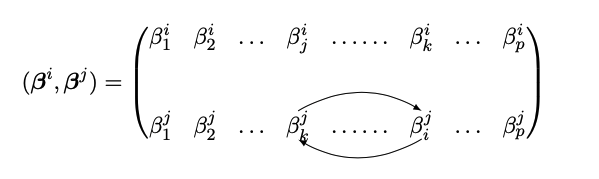
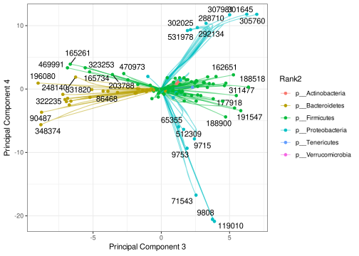
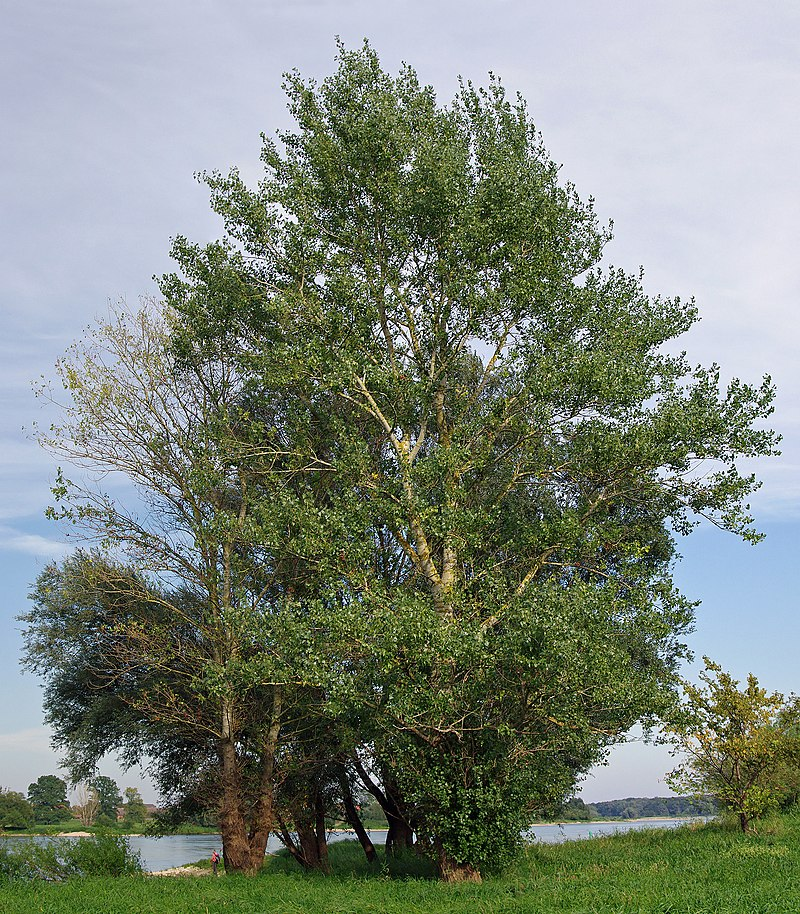
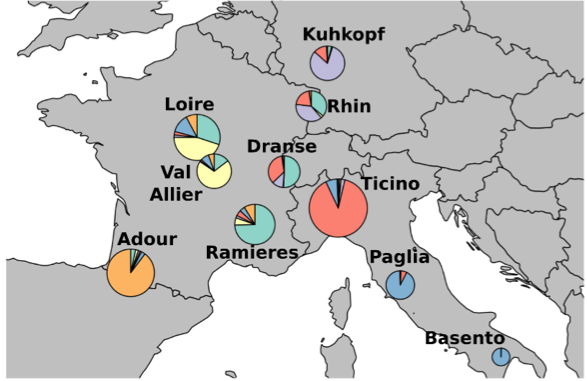

Gaussian Graphical Models (GGMs) are widely used in high-dimensional data analysis to synthesize the interaction between variables. In many applications, such as genomics or image analysis, graphical models rely on sparsity and clustering to reduce dimensionality and improve performances. This paper explores a slightly different paradigm where clustering is not knowledge-driven but performed simultaneously with the graph inference task. We introduce a novel Multiscale Graphical Lasso (MGLasso) to improve networks interpretability by proposing graphs at different granularity levels. The method estimates clusters through a convex clustering approach — a relaxation of k-means, and hierarchical clustering. The conditional independence graph is simultaneously inferred through a neighborhood selection scheme for undirected graphical models. MGLasso extends and generalizes the sparse group fused lasso problem to undirected graphical models. We use continuation with Nesterov smoothing in a shrinkage-thresholding algorithm (CONESTA) to propose a regularization path of solutions along the group fused Lasso penalty, while the Lasso penalty is kept constant. Extensive experiments on synthetic data compare the performances of our model to state-of-the-art clustering methods and network inference models. Applications to gut microbiome data and poplar’s methylation mixed with transcriptomic data are presented.
1 Introduction
Probabilistic graphical models (Lauritzen 1996; Koller and Friedman 2009) are widely used in high-dimensional data analysis to synthesize the interaction between variables. In many applications, such as genomics or image analysis, graphical models reduce the number of parameters by selecting the most relevant interactions between variables. Undirected Gaussian Graphical Models (GGMs) are a class of graphical models used in Gaussian settings. In the context of high-dimensional statistics, graphical models are generally assumed sparse, meaning that a small number of variables interact compared to the total number of possible interactions. This assumption has been shown to provide both statistical and computational advantages by simplifying the structure of dependence between variables (Dempster 1972) and allowing efficient algorithms (Meinshausen and Bühlmann 2006). See, for instance, Fan, Liao, and Liu (2016) for a review of sparse graphical models inference.
In GGMs, it is well known (Lauritzen 1996) that inferring the graphical model or, equivalently, the conditional independence graph (CIG) boils down to inferring the support of the precision matrix \mathbf{\Omega} (the inverse of the variance-covariance matrix). Several \ell_1 penalized methods have been proposed in the literature to learn the CIG of GGMs. For instance, the neighborhood selection(MB, Meinshausen and Bühlmann 2006) based on a nodewise regression approach via the least absolute shrinkage and selection operator(Lasso, R. Tibshirani 1996) is a popular method. Each variable is regressed on the others, taking advantage of the link between the so-obtained regression coefficients and partial correlations. The MB method has generated a long line of work in nodewise regression methods. For instance, Rocha, Zhao, and Yu (2008) and Ambroise, Chiquet, and Matias (2009) showed that nodewise regression could be seen as a pseudo-likelihood approximation and Peng et al. (2009) extended the MB method to estimate sparse partial correlations using a single regression problem. Other inference methods similar to nodewise regression include a method based on the Dantzig selector (Yuan 2010) and the introduction of the Clime estimator (Cai, Liu, and Luo 2011). Another family of sparse CIG inference methods directly estimates \mathbf{\Omega} via direct minimization of the \ell_1-penalized negative log-likelihood (Banerjee, El Ghaoui, and d’Aspremont 2008), without resorting to the auxiliary regression problem. This method called the graphical Lasso(GLasso, Friedman, Hastie, and Tibshirani 2007), benefits from many optimization algorithms (Yuan and Lin 2007; Rothman et al. 2008; Banerjee, El Ghaoui, and d’Aspremont 2008; Hsieh et al. 2014).
Such inference methods are widely used and enjoy many favorable theoretical and empirical properties, including robustness to high-dimensional problems. However, some limitations have been observed, particularly in the presence of strongly correlated variables. Known impairments of Lasso-type regularization cause these limitations in this context (Bühlmann et al. 2012; Park, Hastie, and Tibshirani 2006). To overcome this, in addition to sparsity, several previous works attempt to estimate CIG by integrating clustering structures among variables for statistical sanity and interpretability. A non-exhaustive list of works that integrate a clustering structure to speed up or improve the estimation procedure includes Honorio et al. (2009), Ambroise, Chiquet, and Matias (2009), Mazumder and Hastie (2012), Tan, Witten, and Shojaie (2013), Devijver and Gallopin (2018), Yao and Allen (2019).
The above methods exploit the group structure to simplify the graph inference problem and infer the CIG between single variables. Another question that has received less attention is the inference of the CIG between the groups of variables, i.e., between the meta-variables representative of the group structure. A recent work introducing inference of graphical models on multiple grouping levels is Cheng, Shan, and Kim (2017). They proposed inferring the CIG of gene data on two levels corresponding to genes and pathways, respectively. Note that pathways are considered as groups of functionally related genes known in advance. The inference is achieved by optimizing a penalized maximum likelihood that estimates a sparse network at both gene and group levels. Our work is also part of this dynamic. We introduce a penalty term allowing parsimonious networks to be built at different clustering levels. The main difference with the procedure of Cheng, Shan, and Kim (2017) is that we do not require prior knowledge of the group structure, which makes the problem significantly more complex. In addition, our method has the advantage of proposing CIGs at more than two levels of granularity.
We introduce the Multiscale Graphical Lasso (MGLasso), a novel method to estimate simultaneously a hierarchical clustering structure and graphical models depicting the conditional independence structure between clusters of variables at each level of the hierarchy. Our approach is based on neighborhood selection (Meinshausen and Bühlmann 2006) and considers an additional fused-Lasso type penalty for clustering (Pelckmans et al. 2005; Hocking et al. 2011; Lindsten, Ohlsson, and Ljung 2011).
The use of fusion penalties in Gaussian graphical model inference is a well-studied area. Some prior works on learning sparse GGMs with a fusion penalty term have focused on penalized likelihood. Among those, a line of works (Danaher, Wang, and Witten 2014; S. Yang et al. 2015) infers multiple graphs across several classes while assuming the observations belong to different known clusters. Another line of research (Honorio et al. 2009; Yao and Allen 2019; Lin et al. 2020) investigates fusion penalties for enforcing local constancy in the nodes of the inferred network. Variables belonging to the same clusters are thus more likely to share the same neighborhood. These ordinary likelihood-based models are computationally challenging compared to pseudo-likelihood approximations. The unpublished manuscript of Ganguly and Polonik (2014) introduces a fusion-like penalty in the neighborhood selection framework. However, the problem is solved in a node-wise regression fashion where the p regressions problems are not combined.
The multitask learning framework can be extended to the learning of GGMs. Chiquet, Grandvalet, and Ambroise (2011) introduced a multitask inference for multiple graphical models when observations belong to different clusters. In MGLasso, the multitask learning framework is combined with a novel general fusion penalty to uncover clustering over variables. In the defined fusion term, we consider reordering the regression coefficients to match common predictors and symmetric coefficients. That results in enforcing the grouping property by encouraging variables belonging to the same cluster to have the same neighborhood. MGLasso exploits the multitask learning framework for GGMs inference coupled with a convex clustering problem over the nodes to infer multiscale networks and clusters simultaneously. To our knowledge, this is the first attempt in the literature of undirected GGMs. MGLasso can also be seen as an extension of sparse group fused Lasso for graphical models and be straightforwardly extended to probability distributions belonging to the exponential family (E. Yang et al. 2012). The MGLasso algorithm is implemented in the R package mglasso available at https://CRAN.R-project.org/package=mglasso. The remainder of this paper is organized as follows. In Section 2 and Section 3, we formally introduce the Multiscale Graphical Lasso and its optimization algorithm. Section 4 presents simulated and real data numerical results.
2 Multiscale Graphical Lasso
Let \mathbf X = (X^1, \dots, X^p)^T be a p-dimensional Gaussian random vector, with mean vector \boldsymbol \mu \in \mathbb R^p and positive definite covariance matrix \mathbf \Sigma \in \mathbb R^{p \times p}. Let G = (V, E) be a graph encoding the conditional independence structure of the normal distribution \mathcal N(\boldsymbol \mu, \mathbf \Sigma), where V = \{1,\ldots p\} is the set of vertices and E the set of edges. The graph G is uniquely determined by the support of the precision matrix \mathbf{\Omega} = \mathbf{\Sigma}^{-1}(Dempster 1972). Specifically, for any two vertices i \neq j\in V, the edge (i,j) belongs to the set E if and only if \Omega_{ij} \neq 0. On the contrary, if \Omega_{ij} = 0, the variables X^i and X^j are said to be independent conditionally to the remaining variables X^{\setminus (i, j)}. We note,
X^i
\perp \!\!\! \perp X^j |X^{\setminus (i, j)} \Leftrightarrow \Omega_{ij} = 0.
Let \boldsymbol X = \left( \boldsymbol X_1^T, \dots, \boldsymbol X_n^T \right )^T be the n \times p-dimensional data matrix composed of n i.i.d samples of the Gaussian random vector \mathbf X. To perform graphical model inference, Meinshausen and Bühlmann (2006) consider p separate linear regressions of the form:
\hat{\boldsymbol{\beta}^i}(\lambda) = \underset{\boldsymbol{\beta}^i
\in \mathbb{R}^{p-1}}{\operatorname{argmin}} \frac{1}{n} \left \lVert
\mathbf{X}^i - \mathbf{X}^{\setminus i} \boldsymbol{\beta}^i \right \rVert_2 ^2
+ \lambda \left \lVert \boldsymbol{\beta}^i \right \rVert_1,
\tag{1} where \lambda is a non-negative regularization parameter, \mathbf{X}^{\setminus i} denotes the matrix \mathbf{X} deprived of column i, \boldsymbol{\beta}^i = (\beta^i_j)_{j \in \{1,\dots,p\} \backslash i} is a vector of p-1 regression coefficients and \left \lVert . \right \rVert_1 is the \ell_1-norm. These Lasso regularized problems estimate the neighborhoods, one variable at a time. The final edge set estimates \hat E can be deduced from the union of the estimated neighborhoods using an AND or OR rule (Meinshausen and Bühlmann (2006)). The MB approach is based on the central relationship between simple linear regression and precision matrix coefficients. It can be shown that \beta^i_j = -\frac{\Omega_{ij}}{\Omega_{ii}}(Lauritzen 1996).
On the other hand, let us now consider the clustering analysis of the p variables in \mathbb R^n. The convex clustering problem (Hocking et al. 2011; Lindsten, Ohlsson, and Ljung 2011; Pelckmans et al. 2005) is the minimization of the quantity
\frac{1}{2}
\sum_{i=1}^p \left \lVert \boldsymbol X^i - \boldsymbol \alpha^i \right
\rVert_2^2 + \lambda \sum_{i < j} w_{ij} \left \lVert \boldsymbol \alpha^i -
\boldsymbol \alpha^j \right \rVert_q
\tag{2} with respect to the matrix \boldsymbol \alpha \in \mathbb R^{p \times n}, where \lambda is a sparsity penalization parameter, \{ w_{ij} \} are symmetric positive weights, \boldsymbol \alpha^i \in \mathbb R^n is the centroid to which \boldsymbol X^i is assigned to, and \left \lVert . \right \rVert_q is the \ell_q-norm on \mathbb R^p with q \ge 1. Points \boldsymbol X^i and \boldsymbol X^j are assigned to the same cluster if \hat{\boldsymbol \alpha^i} \approx \hat{\boldsymbol \alpha^j}. The regularization path of solutions to problem in Equation 2 can be represented as a dendrogram. The path properties have been studied in Chi and Lange (2015) and Chiquet, Gutierrez, and Rigaill (2017), among others. Note that these approaches rely on geometric properties of matrix \boldsymbol X, and do not require any assumption on the distribution of the covariates.
We propose to combine the MB and convex clustering approaches. Specifically, the p independent Lasso regressions of the MB approach are merged into a single optimization criterion where a convex clustering fusion penalty in \ell_2 is applied on the regression vectors considered as cluster centers. Namely, the Multiscale Graphical Lasso (MGLasso) pseudo-likelihood problem minimizes in a Gaussian framework the following quantity:
J_{\lambda_1,
\lambda_2}(\boldsymbol{\beta}; \mathbf{X} ) = \frac{1}{2} \sum_{i=1}^p \left
\lVert \mathbf{X}^i - \mathbf{X}^{\setminus i} \boldsymbol{\beta}^i \right
\rVert_2 ^2 + \lambda_1 \sum_{i = 1}^p \left \lVert \boldsymbol{\beta}^i
\right \rVert_1 + \lambda_2 \sum_{i < j} \left \lVert \boldsymbol{\beta}^i -
\boldsymbol \tau_{ij}\boldsymbol{\beta}^j \right \rVert_2,
\tag{3} with respect to \boldsymbol{\beta} := [{\boldsymbol{\beta}^1}, \ldots, {\boldsymbol{\beta}^p}] \in \mathbb{R}^{(p-1) \times p}, where \mathbf{X}^{i}\in \mathbb{R}^n denotes the i-th column of \mathbf{X}, \lambda_1 and \lambda_2 are penalization parameters, \boldsymbol \tau_{ij} \in \mathbb R^{(p-1)\times(p-1)} is a permutation matrix, which permutes the coefficients in the regression vector \boldsymbol \beta^j such as
\left
\lVert \boldsymbol{\beta}^i - \boldsymbol \tau_{ij}\boldsymbol{\beta}^j \right
\rVert_2 = \sqrt{\sum_{k \in \{1, \dots,p \} \backslash \{i,j\}} (\beta^i_k -
\beta^j_k)^2 + (\beta^i_j - \beta^j_i)^2 },
as illustrated in Figure 1. The coefficient \beta^i_k is to be read as the multiple regression coefficients of \boldsymbol X^i on \boldsymbol X^k.
The MGLasso criterion can be seen as a multitask regression problem where the set of responses is identical to the set of predictors. The Lasso penalty term encourages sparsity in the estimated coefficients while the group-fused term encourages fusion in the regression vectors \boldsymbol{\beta}^i and \boldsymbol{\beta}^j.
Let us illustrate by an example the effect of the fusion term in the proposed approach. Two variables i and j are in the same group when \|\boldsymbol{\beta}^i - \boldsymbol \tau_{ij} \boldsymbol{\beta}^j\|_2 \approx 0. Considering a cluster \mathcal C of q variables, it is straightforward to show that \forall (i,j) \in \mathcal C^2, we have \hat {\beta^i_j}=\beta_{\mathcal C}, where \beta_{\mathcal C} is a scalar. Thus the algorithm is likely to produce precision matrices with blocks of constant entries for a given value of \lambda_2, each block corresponding to a cluster. In the same vein as Park, Hastie, and Tibshirani (2006), a cluster composed of variables that share the same coefficients can be summarized by a representative variable.
A component-wise difference between two regression vectors without reordering the coefficients would not necesarily cluster variables which share the same neighborhood. The permutation \boldsymbol \tau_{ij} reoders coefficients in such a way that differences are taken between symmetric coeffecients and those corresponding to the same set of predictors. The model is thus likely to cluster together variables that share the same neighboring structure and encourages symmetric graph structures.

Figure 1: Illustration of the permutation between regression coefficients in the MGLasso model.
In practice, when external information about the clustering structure is available, the problem can be generalized into:
\min_{\boldsymbol{\beta}}
\sum_{i=1}^p\frac{1}{2} \left \lVert \mathbf{X}^i - \mathbf{X}^{\setminus i}
\boldsymbol{\beta}^i \right \rVert_2 ^2 + \lambda_1 \sum_{i = 1}^p \left \lVert
\boldsymbol{\beta}^i \right \rVert_1 + \lambda_2 \sum_{i < j} w_{ij} \left
\lVert \boldsymbol{\beta}^i - \boldsymbol \tau_{ij}\boldsymbol{\beta}^j \right
\rVert_2,
\tag{4} where w_{ij} is a positive weight. In the remainder of the paper, we will assume that w_{ij} = 1 for simplicity.
3 Numerical scheme
This Section introduces a complete numerical scheme of the Multiscale Graphical Lasso via convex optimization and a model selection procedure. Section 3.1 reviews the principles of the Continuation with Nesterov smoothing in a shrinkage-thresholding algorithm (CONESTA, Hadj-Selem et al. 2018). Section 3.2 details a reformulation of the MGLasso criterion, which eases the use of CONESTA as a solver. Finally, Section 3.3 presents the procedure for selecting the regularization parameters.
3.1 Optimization via CONESTA algorithm
The optimization problem for Multiscale Graphical Lasso is convex but not straightforward to solve using classical algorithms because of the fused-lasso type penalty, which is non-separable and admits no closed-form solution for the proximal gradient. We rely on the Continuation with Nesterov smoothing in a shrinkage-thresholding algorithm (Hadj-Selem et al. 2018) dedicated to high-dimensional regression problems with structured sparsity, such as group structures.
The CONESTA solver, initially introduced for neuro-imaging problems, addresses a general class of convex optimization problems that include group-wise penalties. The algorithm solves problems in the form
\operatorname{minimize \ w.r.t. }
\boldsymbol{\theta} \quad f(\boldsymbol{\theta}) = g(\boldsymbol{\theta}) +
\lambda_1 h(\boldsymbol{\theta}) + \lambda_2 s(\boldsymbol{\theta}),
\tag{5}
where \boldsymbol{\theta}\in \mathbb{R}^d and \lambda_1 and \lambda_2 are penalty parameters.
In the original paper (Hadj-Selem et al. 2018), g(\boldsymbol{\theta}) is a differentiable function, h(\boldsymbol{\theta}) is a penalty function whose proximal operator \operatorname{prox}_{\lambda_1 h} is known in closed-form.
Given \phi \subseteq \{1,\ldots, d\}, let \boldsymbol{\theta}_\phi = (\theta_i)_{i \in \phi} denote the subvector of \boldsymbol{\theta} referenced by the indices in \phi. Denote \Phi = \{ \phi_1, \dots, \phi_{\operatorname{Card}(\Phi)}\} a collection with \phi_i \subseteq \{1,\ldots, d\}. Let the matrix \mathbf{A}_\phi \in \mathbb{R}^{m \times \operatorname{Card}(\Phi) } define a linear map from \mathbb{R}^{\operatorname{Card}(\phi)} to \mathbb{R}^m by sending the column vector \boldsymbol{\theta}_\phi \in \mathbb{R}^{\operatorname{Card}(\phi)} to the column vector \mathbf{A}_\phi \boldsymbol{\theta}_\phi \in \mathbb{R}^m. The function s(\boldsymbol{\theta}) is assumed to be an \ell_{1,2}-norm i.e., the sum of the group-wise \ell_2-norms of the elements \mathbf{A}_\phi \boldsymbol{\theta}_\phi, \phi \in \Phi. Namely,
s(\boldsymbol{\theta}) =
\sum_{\phi \in \Phi} \|\mathbf{A}_\phi \boldsymbol{\theta}_\phi\|_2.
When \mathbf{A}_\phi is the identity operator, the penalty function s is the overlapping group-lasso and m = \operatorname{Card}(\phi). When it is a discrete derivative operator, s is a total variation penalty, and m can be seen as the number of neighborhood relationships.
The non-smooth \ell_{1,2}-norm penalty can be approximated by a smooth function with known gradient computed using Nesterov’s smoothing (Nesterov 2005b). Given a smoothness parameter \mu>0, let us define the smooth approximation
s_{\mu}(\boldsymbol{\theta}) = \max_{\boldsymbol{\alpha}
\in \mathcal{K}} \left \{ \boldsymbol{\alpha}^T \mathbf{A} \boldsymbol{\theta} -
\frac{\mu}{2} \| \boldsymbol{\alpha} \|_2^2 \right \},
where \mathcal{K} is the cartesian product of \ell_2-unit balls, \mathbf{A} is the vertical concatenation of the matrices \mathbf{A}_\phi and \boldsymbol{\alpha} is an auxiliary variable resulting from the dual reformulation of s(\boldsymbol{\theta}). Note that \lim_{\mu \rightarrow 0} s_{\mu}(\boldsymbol{\theta}) = s(\boldsymbol{\theta}). A Fast Iterative Shrinkage-Thresholding Algorithm (FISTA, Beck and Teboulle 2009) step can then be applied after computing the gradient of the smooth part i.e. g(\boldsymbol{\theta}) + \lambda_2 s_{\mu}(\boldsymbol{\theta}) of the approximated criterion.
The main ingredient of CONESTA remains in the determination of the optimal smoothness parameter using the duality gap, which minimizes the number of FISTA iterations for a given precision \epsilon. The specification of \mu is subject to dynamic update. A sequence of decreasing optimal smoothness parameters is generated in order to dynamically adapt the FISTA algorithm stepsize towards \epsilon. Namely, \mu^k = \mu_{opt}(\epsilon^k). The smoothness parameter decreases as one gets closer to \boldsymbol{\theta} ^\star, the solution of the problem defined in Equation 5. Since \boldsymbol{\theta} ^\star is unknown; the approximation of the distance to the minimum is achieved via the duality gap. Indeed
\operatorname{GAP}_{\mu^k}(\boldsymbol{\theta}^k) \ge
f_{\mu^k}(\boldsymbol{\theta}^k) - f(\boldsymbol{\theta}^\star) \ge 0.
We refer the reader to the seminal paper for more details on the formulation of \operatorname{GAP}_{\mu^k}(\boldsymbol{\theta}^k). The CONESTA routine is spelled out in the algorithm CONESTA solver where L(g + \lambda_2 s_{\mu}) is the Lipschitz constant of \nabla(g + \lambda_2 s_{\mu}),k is the iteration counter for the inner FISTA updates and i is the iteration counter for CONESTA updates.
3.2 Reformulation of MGLasso for CONESTA algorithm
Using CONESTA for solving the MGLasso problem requires a reformulation in order to comply with the form of loss function required by CONESTA. The objective of MGLasso can be written as
\operatorname{argmin} \frac{1}{2} ||\mathbf{Y} - \tilde{\mathbf{X}}
\tilde{\boldsymbol{\beta}}||_2^2 + \lambda_1 ||\tilde{\boldsymbol{\beta}}||_1 +
\lambda_2 \sum_{i<j} ||\boldsymbol D_{ij} \tilde{\boldsymbol{\beta}}||_2,
\tag{6}
where \mathbf{Y} = \operatorname{Vec}(\mathbf{X}) \in \mathbb{R}^{np}, \tilde{\boldsymbol{\beta}} = \operatorname{Vec(\boldsymbol{\beta})} \in \mathbb{R}^{p (p-1)}, \tilde{\mathbf{X}} is a \mathbb{R}^{[np]\times [p \times (p-1)]} block-diagonal matrix with \mathbf{X}^{\setminus i} on the i-th block. The matrix \boldsymbol D_{ij} is a (p-1)\times p(p-1) matrix chosen so that \boldsymbol D_{ij} \tilde{\boldsymbol{\beta}} = \boldsymbol{\beta}^i - \boldsymbol \tau_{ij} \boldsymbol{\beta}^j.
Note that we introduce this notation for simplicity of exposition, but, in practice, the sparsity of the matrices \boldsymbol D_{ij} allows a more efficient implementation. Based on reformulation Equation 6, we may apply CONESTA to solve the objective of MGLasso for fixed \lambda_1 and \lambda_2. The procedure is applied, for fixed \lambda_1, to a range of decreasing values of \lambda_2 to obtain a hierarchical clustering. The corresponding pseudo-code is given in the following algorithm where (\mathbf{X}^i)^{\dagger} denotes the pseudo-inverse of \mathbf{X}^i and \epsilon_{fuse} the threshold for merging clusters. We note here that problem in Equation 6 is of the same form as the optimization problem solved in the paper by Hadj-Selem et al. (2018): as they showed, CONESTA outperforms other optimization approaches such as the alternating direction method of multipliers (ADMM, Boyd et al. 2011), the excessive gap method (EGM, Nesterov 2005a), the classical FISTA with fixed smoothing and the inexact FISTA (Schmidt, Roux, and Bach 2011). Rather than repeating their experiments, we refer the reader to Section IV of their paper.
\begin{algorithm}
\caption{MGLasso algorithm}
\begin{algorithmic}
\State \textbf{Inputs}: \\
$\quad$ Set of variables $\mathbf{X} = \{\mathbf{X}^1, \dots, \mathbf{X}^p \} \in \mathbb R^{n\times p}$ \\
$\quad$ Penalty parameters $\lambda_1 \ge 0, {\lambda_2}_{\operatorname{initial}} > 0$ \\
$\quad$ Increasing factor $\eta > 1$ for fusion penalties $\lambda_2$\\
$\quad$ Fusion threshold $\epsilon_{fuse} \ge 0$
\State \textbf{Outputs:} For $\lambda_1$ fixed and $\lambda_2$ from $0$ to ${\lambda_2}_{\operatorname{initial}} \times \eta^{(I)}$ with $I$ the number of iterations: \\
$\quad$ Regression vectors $\boldsymbol{\beta}(\lambda_1, \lambda_2) \in \mathbb R^{p \times (p-1)}$, \\
$\quad$ Clusters partition of variables indices in $K$ clusters: $C(\lambda_1, \lambda_2)$
\State \textbf{Initializations:} \\
$\quad$ $\boldsymbol{\beta}^i = (\mathbf{X}^i)^{\dagger}\mathbf{X}^i$, $\forall i = 1, \dots, p$ for warm start in CONESTA solver \\
$\quad$ $C = \left \{\{1\}, \dots, \{p\}\right \}$ Initial clusters with one element per cluster. \\
$\quad$ Set $\lambda_2 = 0$ \\
$\quad$ Compute $\boldsymbol{\beta}$ using CONESTA solver \\
$\quad$ Update clusters $C$ with rule described in \textbf{while} loop.
\State \textbf{Set:} $\lambda_2 = {\lambda_2}_{\operatorname{initial}}$ \\
\Comment{Clustering path}
\While{$\operatorname{Card}(C) > 1$}
\State Compute $\boldsymbol{\beta}$ using CONESTA solver with warm start from previous iteration \\
\Comment{Clusters update}
\State Compute pairwises distances $d(i,j)=\left \lVert \boldsymbol{\beta}^i - \boldsymbol \tau_{ij} \boldsymbol{\beta}^j \right \rVert_2$, $\forall i,j \in \{1, \dots, p\}$ \\
\State Determine clusters $C_k (k=1, \dots, K)$ with the rule $(i,j) \in C_k$ iff. $d(i,j) \le \epsilon_{fuse}$
\State $\lambda_2 = \lambda_2 \times \nu$
\EndWhile
\end{algorithmic}
\end{algorithm}
3.3 Model selection
A crucial question for practical applications is the definition of a rule to select the penalty parameters (\lambda_1, \lambda_2). This selection problem operates at two levels: \lambda_1 controls the sparsity of the graphical model, and \lambda_2 controls the number of clusters in the optimal clustering partition. These two parameters are dealt with separately: the sparsity parameter \lambda_1 is chosen via model selection, while the clustering parameter \lambda_2 varies across a grid of values in order to obtain graphs with different levels of granularity. The problem of model selection in graphical models is difficult in the high dimensional case where the number of samples is small compared to the number of variables, as classical Akaike information criterion (AIC, Akaike 1998) and Bayesian information criterion (BIC, Schwarz 1978) tend to perform poorly (Liu, Roeder, and Wasserman 2010).
In this paper, we focus on the StARS stability selection approach proposed by Liu, Roeder, and Wasserman (2010) as suggested by some preliminary tests where we compared the Extended BIC (EBIC, Foygel and Drton 2010), a model selection criterion calibrated with slope heuristics (Baudry, Maugis, and Michel 2012), the Rotation invariant criterion implemented in the Huge package (Zhao et al. 2012), the GGMSelect procedure (Giraud, Huet, and Verzelen 2012), cross-validation (Bien and Tibshirani 2011) and StARS. The method uses k subsamples of data to estimate the associated graphs for a given range of \lambda_1 values. For each value, a global instability of the graph edges is computed. The optimal value of \lambda_1 is chosen so as to minimize the instability, as follows. Let \lambda^{(1)}_1, \dots, \lambda_1^{(K)} be a grid of sparsity regularization parameters, and S_1, \dots, S_N be the N bootstrap samples obtained by sampling the rows of the data set \mathbf{X}. For each k\in\{1,\ldots,K\} and for each j\in\{1,\ldots, N\}, we denote by \mathcal{A}^{k,j}(\mathbf{X}) the adjacency matrix of the estimated graph obtained by applying the inference algorithm to S_n with regularization parameter \lambda_1^{(k)}. For each possible edge (s,t)\in\{1,\ldots,p\}^2, the probability of edge appearance is estimated empirically by
\hat
\theta_{st}^{(k)} = \frac{1}{N} \sum_{j=1}^N \mathcal{A}^{k,j}_{st}.
Define \hat \xi_{st}(\Lambda) = 2 \hat \theta_{st} (\Lambda) \left ( 1 - \hat
\theta_{st} (\Lambda) \right )
the empirical instability of edge (s,t) (that is, twice the variance of the Bernoulli indicator of edge (s,t)). The instability level associated with \lambda_1^{(k)} is given by
\hat D(\lambda_1^{(k)}) = \frac{\sum_{s<t} \hat \xi_{st}(\lambda_1^{(k)})}{
\binom{p}{2}}.
StARS selects the optimal penalty parameter as follows
\hat \lambda = \max_k\left\{ \lambda_1^{(k)}: \hat D(\lambda_1^{(k)}) \le
\upsilon, k\in\{1,\ldots,K\} \right \},
where \upsilon is the threshold chosen for the instability level.
4 Simulation experiments
In this Section, we conduct a simulation study to evaluate the performance of the MGLasso method, both in terms of clustering and support recovery. Receiver Operating Characteristic (ROC) curves are used to evaluate the adequacy of the inferred graphs with the ground truth for the MGLasso and GLasso in its neighborhood selection version in the Erdös-Rényi (Erdős, Rényi, et al. 1960), Scale-free (Newman, Strogatz, and Watts 2001), and Stochastic Block Models (SBM, Fienberg and Wasserman 1981) frameworks. The Adjusted Rand indices are used to compare the partitions obtained with MGLasso, hierarchical agglomerative clustering, and K-means clustering in a stochastic block model framework.
4.1 Synthetic data models
We consider three different synthetic network models: the Stochastic Block Model (Fienberg and Wasserman 1981), the Erdös-Renyi model (Erdős, Rényi, et al. 1960) and the Scale-Free model (Newman, Strogatz, and Watts 2001). In each case, Gaussian data is generated by drawing n independent realizations of a multivariate Gaussian distribution \mathcal N(0, \mathbf{\Sigma}) where \mathbf{\Sigma} \in \mathbb{R}^{p \times p} and \mathbf{\Omega} = \mathbf{\Sigma} ^{-1}. The support of \mathbf{\Omega}, equivalent to the network adjacency matrix, is generated from the three different models. The difficulty level of the problem is controlled by varying the ratio \frac{n}{p} with p fixed at 40: \frac{n}{p}\in \{0.5,1,2\}.
4.1.1 Stochastic Block Model
We construct a block-diagonal precision matrix \mathbf{\Omega} as follows. First, we generate the support of \mathbf{\Omega} as shown in Figure 2, denoted by \boldsymbol A\in\{0,1\}^{p\times p}. To do this, the variables are first partitioned into K = 5 hidden groups, noted C_1, \dots, C_K described by a latent random variable Z_i, such that Z_i = k if i = C_k. Z_i follows a multinomial distribution
P(Z_i = k) = \pi_k, \quad
\forall k \in \{1, \dots, K\},
where \pi = (\pi_1, \dots, \pi_k) is the vector of proportions of clusters whose sum is equal to one. The set of latent variables is noted \mathbf{Z} = \{ Z_1, \dots, Z_K\}. Conditionally to \mathbf{Z}, A_{ij} follows a Bernoulli distribution such that
A_{ij}|Z_i =
k, Z_j = l \sim \mathcal{B}(\alpha_{kl}), \quad \forall k,l \in \{1, \dots,
K\},
where \alpha_{kl} is the probability of inter-cluster connectivity, with \alpha_{kl} = 0.01 if k\neq l and \alpha_{ll} = 0,75. For k\in\{1,\ldots, K\}, we define p_k = \sum_{i=1}^p \boldsymbol{1}_{\{Z_i = k\}}. The precision matrix \mathbf{\Omega} of the graph is then calculated as follows. We define \Omega_{ij} = 0 if Z_i\neq Z_j ; otherwise, we define \Omega_{ij} = A_{ij}\omega_{ij} where, for all i\in\{1,\ldots,p\} and for all j\in\{1,\ldots,p| Z_j = Z_i\}, \omega_{ij} is given by :
\begin{aligned}
&\omega_{ii} := \frac{1+\rho(p_{Z_i}-2)}{1+\rho(p_{Z_i}-2)-\rho^2(p_{Z_i}-1)};\\
&\omega_{ij} := \frac{-\rho}{1+\rho(p_{Z_i}-2)-\rho^2(p_{Z_i}-1)}.
\end{aligned}
If \alpha_{ll} were to be equal to one, this construction of \mathbf{\Omega} would make it possible to control the level of correlation between the variables in each block to \rho. Introducing a more realistic scheme with \alpha_{ll}=0.75 allows only to have an approximate control.
Figure 2: Adjacency matrix of a stochastic block model defined by K=5 classes with identical prior probabilities set to \pi = 1/K, inter-classes connection probability \alpha_{kl}=0.01, k \neq l, intra-classes connection probability \alpha_{ll}=0.75 and p=40 vertices.
4.1.2 Erdös-Renyi Model
The Erdös-Renyi model is a special case of the stochastic block model where \alpha_{kl} = \alpha_{ll} = \alpha is constant. We set the density \alpha of the graph to 0.1; see Figure 3 for an example of the graph resulting from this model.
Figure 3: Adjacency matrix of an Erdös-Renyi model with probability of connection \alpha = 0.1 and p=40 vertices.
4.1.3 Scale-free Model
The Scale-free Model generates networks whose degree distributions follow a power law. The graph starts with an initial chain graph of 2 nodes. Then, new nodes are added to the graph one by one. Each new node is connected to an existing node with a probability proportional to the degree of the existing node. We set the number of edges in the graph to 40. An example of scale-free graph is shown in Figure 4.
Figure 4: Adjacency matrix of a Scale-free model with 40 edges and p=40 nodes.
4.2 Support recovery
We compare the network structure learning performance of our approach to that of GLasso in its neighborhood selection version using ROC curves. In both GLasso and MGLasso, the sparsity is controlled by a regularization parameter \lambda_1; however, MGLasso admits an additional regularization parameter, \lambda_2, which controls the strength of convex clustering. To compare the two methods, in each ROC curve, we vary the parameter \lambda_1 while the parameter \lambda_2 (for MGLasso) is kept constant. We computed ROC curves for 4 different penalty levels for the \lambda_2 parameter; since GLasso does not depend on \lambda_2, the GLasso ROC curves are replicated.
In a decision rule associated with a sparsity penalty level \lambda_1, we recall the definition of the two following functions. The true positive rate is given by \frac{TP(\lambda_1)}{TP(\lambda_1) + FN(\lambda_1)}. The false positive rate is defined as follows 1 - \frac{TN(\lambda_1)}{TN(\lambda_1) + FP(\lambda_1)}, where TP is the number of true positives, TN the number of true negatives, FN the number of false negatives and FP the number of false positives. The ROC curve represents the true positive rate as a function of the false positive rate. For a given level of true positive rate, the best method minimizes the false positive rate.
For each configuration (n, p fixed), we generate 50 replications and their associated ROC curves, which are then averaged. The average ROC curves for the three models are given in Figure 5, Figure 6 and Figure 7 by varying \frac{n}{p}\in \{0.5,1,2\}.
Figure 5: Mean ROC curves for MGLasso and GLasso graph inference in the Erdös-Renyi model. We varied the fusion penalty parameter of MGLasso \lambda_2 \in \{0, 3.33, 10\} alongside the ratio \frac{n}{p}\in \{0.5,1,2\}. Within each panel, the ROC curve shows the True positive rate (y-axis) vs. the False positive rate (x-axis) for both MGLasso (blue) and GLasso (brown). Since GLasso does not have a fusion penalty, its ROC curves were replicated for panels belonging to the same row. We also plot the random classifier (dotted grey line). The results have been averaged over 50 simulated datasets and suggest that MGLasso performs no worse than GLasso. For \lambda_2 = 0, the MGLasso approach is equivalent to GLasso in its neighborhood selection version.
Figure 6: Mean ROC curves for MGLasso and GLasso graph inference in the Scale-free model. We varied the fusion penalty parameter of MGLasso \lambda_2 \in \{0, 3.33, 10\} alongside the ratio \frac{n}{p}\in \{0.5,1,2\}. Within each panel, the ROC curve shows the True positive rate (y-axis) vs. the False positive rate (x-axis) for both MGLasso (blue) and GLasso (brown). Since GLasso does not have a fusion penalty, its ROC curves were replicated for panels belonging to the same row. We also plot the random classifier (dotted grey line). The results have been averaged over 50 simulated datasets and suggest that MGLasso performs no worse than GLasso. For \lambda_2 = 0, the MGLasso approach is equivalent to Glasso in its neighborhood selection version.
Figure 7: Mean ROC curves for MGLasso and GLasso graph inference in the stochastic block model. We varied the fusion penalty parameter of MGLasso \lambda_2 \in \{0, 3.33, 10\} alongside the ratio \frac{n}{p}\in \{0.5,1,2\}. Within each panel, the ROC curve shows the True positive rate (y-axis) vs. the False positive rate (x-axis) for both MGLasso (blue) and GLasso (brown). Since GLasso does not have a fusion penalty, its ROC curves were replicated for panels belonging to the same row. We also plot the random classifier (dotted grey line). The results have been averaged over 50 simulated datasets and suggest that MGLasso performs no worse than GLasso. For \lambda_2 = 0, the MGLasso approach is equivalent to Glasso in its neighborhood selection version.
Based on these empirical results, we first observe that, in all the considered simulation models, MGLasso improves over GLasso in terms of support recovery in the high-dimensional setting where p<n. In addition, in the absence of a fusion penalty, i.e., \lambda_2 = 0, MGLasso performs no worse than GLasso in each of the 3 models. However, for \lambda_2>0, increasing penalty value does not seem to significantly improve the support recovery performances for the MGLasso, as we observe similar results for \lambda_2=3.3,10. Preliminary analyses show that, as \lambda_2 increases, the estimates of the regression vectors are shrunk towards 0. This shrinkage effect of group-fused penalty terms was also observed in (Chu et al. 2021). Note that the performance of the MGLasso deteriorates comparatively to GLasso when the inter-clusters edge connection probability of the stochastic block model is high.
4.3 Clustering
In order to study clustering performance, we compared the partitions estimated by MGLasso, Hierarchical Agglomerative Clustering (HAC) with Ward’s distance and K-means to the true partition in a stochastic block model framework. Euclidean distances between variables are used for HAC and K-means. The criterion used for the comparison is the adjusted Rand index (ARI). We studied the influence of the correlation level inside clusters on the clustering performances through two different parameters: \rho \in \{ 0.1, 0.3 \}; the vector of cluster proportions is fixed at \mathbf \pi = (1/5, \dots, 1/5). Hundred Gaussian data sets were then simulated for each configuration (\rho, n/p fixed).The optimal sparsity penalty for MGLasso was chosen by the Stability Approach to Regularization Selection (StARS) method (Liu, Roeder, and Wasserman 2010). In practice, we estimated a stability-like parameter in a sample of graphs simulated via the stochastic block model. This estimation of edge variability was then used as the threshold for the StARS method. The parameter \lambda_2 has been varied.
Figure 8: Boxplots of Adjusted Rand Indices for the stochastic block model with 5 classes and p=40 variables for a correlation level \rho=0.1. The number of estimated clusters \{5,10,15,20\} vary alongside the ratio \frac{n}{p}\in \{0.5,1,2\}. Within each panel, the boxplots of ARI between true partition (with 5 classes) and estimated clustering partitions on 100 simulated datasets for k-means (blue), hierarchical agglomerative clustering (yellow), and MGLasso (brown) methods are plotted against the ratio \frac{n}{p}. The cluster assignments of MGLasso are computed from a distance between estimated regression vectors for a given value of \lambda_2. Missing boxplots for MGLasso thus mean computed partitions in the grid of values of \lambda_2 do not yield the fixed number of clusters. The higher the ARI values, the better the estimated clustering partition is.
Figure 9: Boxplots of Adjusted Rand Indices for the stochastic block model with 5 classes and p=40 variables for a correlation level \rho=0.3. The number of estimated clusters \{5,10,15,20\} vary alongside the ratio \frac{n}{p}\in \{0.5,1,2\}. Within each panel, the boxplots of ARI between true partition (with 5 classes) and estimated clustering partitions on 100 simulated datasets for k-means (blue), hierarchical agglomerative clustering (yellow), and MGLasso (brown) methods are plotted against the ratio \frac{n}{p}. The cluster assignments of MGLasso are computed from a distance between estimated regression vectors for a given value of \lambda_2. The higher the ARI values, the better the estimated clustering partition is.
The expected empirical evidence that MGLasso would work reasonably well for strongly correlated variables is somehow highlighted in Figure 8 and Figure 9. The performances of MGLasso slightly improve when going from Figure 8 to Figure 9, which corresponds to correlation levels of 0.1 and 0.3 between variables belonging to the same block, respectively. We observe the same trend for the HAC and the k-means. Compared to these two approaches, the MGLasso presents the lowest values of adjusted Rand indices, thus suggesting a lower quality of clustering. It should be noted that the performance of MGLasso can be sensitive to the selection of the Lasso penalty parameter and the threshold fixed to determine clusters’ fusion. In practice, this fusion threshold is varied in a grid of values close to zero and lower than 10^{-3}. The value leading to the maximum number of intermediate clusters in the clustering path is chosen. Using non-trivial weights could also improve the overall performance of MGLasso.
During the revision of this paper, an interesting question was raised regarding the behavior of the algorithm in a phylogenetic-based model. To investigate this, extensive numerical experiments were conducted on a phylogenetic-based model that evaluates only clustering performances. The results showed that the MGLASSO algorithm’s performance improves, and the method performs as well as some state-of-the-art clustering approaches, including vanilla convex clustering and spectral clustering. In phylogenetic-based models, adjusted Rand indices can be computed between the estimated partition with k clusters and the true partition in k clusters computed from the tree used for the simulation procedure. This differs from the clustering performance evaluation scheme applied in the stochastic block model, where the true partition is considered fixed.
5 Applications
To illustrate the proposed simultaneous graphs and clusters inference approach, we present analyses where the MGLasso model is applied to microbial association data for the study of multiscale networks between operational taxonomic units and to transcriptomic and methylation genotypes for multi-omics data integration.
5.1 Application to microbial associations in gut data
We analyze microbial associations in human gut microbiome data acquired from the round 1 of the American Gut Project (AGP, McDonald et al. (2018)) for p = 127 operational taxonomic units (OTUs) and n = 289 individuals samples. The count of microbial OTUs is an indicator of the abundance of underlying microbial populations. Here, we investigate the network and clustering structures of the OTUs for different levels of granularity on the processed data included in the SpiecEasi R package (see Kurtz (2015) for details). The data is first normalized to have a unit-sum per sample and to remove biases. Then, a centered log-ratio (clr, Aitchison 1982) transformation with an added unit pseudo-count is applied to come back to an unconstrained Euclidean space. For fitting the MGLasso model, we select the Lasso penalty parameter \lambda_1 via the StARS approach with threshold \upsilon = 0.05 and vary the fusion penalty \lambda_2 in the interval [0, 20] with irregular steps. The CPU time taken for 20 values of \lambda_2 is about 8 hours with parallel evaluations on a computation cluster with as many cores as \lambda_2 values. The maximal number of iterations is set to 10000 and the solver precision to 0.01.
We finally illustrate our new method of inferring the multiscale Gaussian graphical model, with an application to the analysis of microbial associations in the American Gut Project. The data used are count data that have been previously normalized by applying the log-centered ratio technique as used in (Kurtz 2015). After some filtering steps (Kurtz 2015) on the operational taxonomic units (OTUs) counts (removed if present in less than 37\% of the samples) and the samples (removed if sequencing depth below 2700), the top OTUs are grouped in a dataset composed of n = 289 for 127 OTUs. As a preliminary analysis, we perform a hierarchical agglomerative clustering (HAC) on the OTUs, which allows us to identify four significant groups. The correlation matrix of the dataset is given in fig-emp-cor; variables have been rearranged according to the HAC partition.
Using these settings, we compute a clustering path of the solutions and estimated graphs for 5 values of \lambda_2 corresponding to 5 different clusters partitions. The Figure 10 shows how the predicted \hat{\boldsymbol X} evolves through \lambda_2. The \hat{\boldsymbol X} are computed from estimated centroids \hat{\boldsymbol \beta} and projected onto two principal components of the original data. The path is not always agglomerative, but the clusters’ splits observed ensure optimal solutions.
Code
library(SpiecEasi)library(colorspace)library(ggrepel)path_data <-"./data/"load(paste0(path_data, "mgl_amgut_rev_l2_seq0to1_20val.RData"))load(paste0(path_data, "mgl_amgut_rev_l2_seq1to20_20val.RData"))load(paste0(path_data, "mgl_amgut_rev_l2_seq0to4_20val.RData"))load(paste0(path_data, "amgut1.filt.phy.rda")) # Data for the phylum taxonomic classifier loaded from supplementary files of the SpiecEasi package. See https://github.com/zdk123/SpiecEasi/blob/master/data/amgut2.filt.phy.rdaload(paste0(path_data, "amgut1.filt.rda"))amgut1.filt <-t(clr(amgut1.filt +1 , 1))taxas <- amgut1.filt.phy@tax_table@.Datarank2_table <-table(taxas[,"Rank2"])col_leaves <-as.factor(rep(rainbow_hcl(6, c=90, l=50), times = rank2_table))plot_clusterpath <-function(X, mglasso_res, colnames_ =NULL, max.overlaps, cut_k_vars =5, colors_) {## Initialisations p <-ncol(X) df.paths <-data.frame(x=c(),y=c(), group=c()) nlevel <-length(mglasso_res)## Principal component analysis svdX <-svd(X) ## singular value decomposition pc <- svdX$u[,3:4,drop=FALSE] ## singular vectorsfor (j in cut_k_vars:nlevel) { Beta <- mglasso_res[[j]]$selected_Theta Xpred <-sapply(1:p, function(i){X %*% Beta[i,]}) pcs <-t(pc)%*%Xpred x <- pcs[1,] y <- pcs[2,] df <-data.frame(x=pcs[1,], y=pcs[2,], group=1:p, Rank2 = colors_) df.paths <-rbind(df.paths,df) }# X_data <- as.data.frame(t(X) %*% pc) ## PCA projections (scores) X_data <- df.paths[1:p,]#colnames(X_data) <- c("x", "y")ifelse(is.null(colnames_), X_data$Name <-colnames(X), X_data$Name <- colnames_) data_plot <-ggplot(data = df.paths, aes(x = x, y = y)) data_plot <- data_plot +geom_path(aes(group = group, colour = Rank2), alpha =0.5) data_plot <- data_plot +geom_text_repel(data = X_data,aes(x = x, y = y, label = Name),max.overlaps = max.overlaps) data_plot <- data_plot +geom_point(data = X_data, aes(x = x, y = y, colour = Rank2), size =1.5) data_plot <- data_plot +xlab('Principal Component 3') +ylab('Principal Component 4') data_plot +theme_bw()}plot_clusterpath(amgut1.filt, c(mgl_amgut_rev, mgl_amgut_rev_set2, mgl_amgut_rev_set3), max.overlaps =10, cut_k_vars =1, colors_ = taxas[,"Rank2"])

Figure 10: Clustering path of the MGLasso convex clustering solutions on microbiome data with 127 OTUs. The predicted data are projected onto the two principal components of the original data, while the fusion penalty varies. As \lambda_2 increases, it reaches a value for which all the estimated centroids are equal; thus, the branches of the path converge to a unique point in the center of the graph. OTUs are colored according to their phylum classification. The path displays abrupt merges. The pure cluster on the graph’s left side (down) corresponds to the phylum Bacteroidetes.
The Figure 11 displays graphs and clusters for different levels of granularity: 127, 63, 31, 15 and 2 clusters. For computing the clusters’ assignment of nodes, the fusion threshold has been set to \epsilon_{fuse} = 0.001. Variables that belong to the same cluster share the same neighborhood; thus, the neighboring information is summarized into a single variable representative of the group. The subfigures show graphs at multiple levels of granularity which are built on the meta-variables or representative variables.
Figure 11: Estimated graphs at multiple levels of granularity. The first graph shows a network inferred when \lambda_2 =0. The number of clusters is equal to the number of OTUs. Increasing the fusion penalty makes it possible to uncover graphs built on the representative variable of each cluster. OTUs are colored according to their phylum taxonomic classifier. The number of clusters is computed from the regression vectors with a fixed fusion threshold.
To assess the relevance of the inferred clusters, they are compared to known taxonomic ranks (phylum, class, order, family, genera, or species). The phylum classification is used. For example, for a clustering partition in 2 groups, the MGLasso clustering partition is composed of 120 variables versus 7 variables. The cluster 2 is exclusively composed of OTUs belonging to the Proteobacteria phylum. The cluster 1 also contains Proteobacteria OTUs, so those identified in cluster 2 might share more intimate characteristics.
Code
ind <-which(all_num_clusters ==2)[1]clusters <-as.character(all_clusters_partition[[ind]])taxas <- amgut1.filt.phy@tax_table@.Datataxonomic.classification <- taxas[,"Rank2"]## remove "p__" characters in species namestaxonomic.classification <-sub("p__", "", taxonomic.classification)tables::as.tabular(table(clusters, taxonomic.classification))
taxonomic.classification
clusters
Actinobacteria
Bacteroidetes
Firmicutes
Proteobacteria
Tenericutes
Verrucomicrobia
1
2
27
76
13
1
1
2
0
0
0
7
0
0
Adjusted Rand indices are not calculated for comparisons as the unitary weights in the convex clustering problem can be suboptimal. The abundance of OTUs belonging to cluster 1, mainly composed of Bacteroidetes and Firmicutes phyla, is seemingly dependent on the abundance of OTUS in cluster 2, i.e., Proteobacteria phylum.
5.2 Application to methylation and transcriptomic genotypes in poplar
Next, we investigate interactions between European poplar genotypes for transcriptomic and DNA methylation data extracted from the Evolutionary and functional impact of EPIgenetic variation in forest TREEs project (EPITREE, Maury et al. 2019). The analysis was purposefully applied to the samples and not the genes in order to highlight the MGLasso clustering performance and show some potential relationships between DNA methylation and gene expression levels for some genotypes.
Poplar (Populus) is often used as a model tree for the study of drought response. Natural populations of black poplars (Populus nigra) have been planted in common gardens in France, Italy, and Germany (see Figure 12) with control on some environmental variables such as water availability (Sow et al. 2018). The poplar has economic importance and is one of the most endangered species as a result of global climate change. The drought response can be studied via DNA methylation, which is a necessary process in plant development and response to environmental variations (Amaral et al. 2020). It consists of the addition of a Methyl group to a cytosine (C) in the genome and occurs in three contexts (CG, CHG, and CHH, where H \in \{ A, C, T\}). Methylation can be measured on two regions of the gene. Methylation in promoters is linked to gene silencing, and methylation in the body of the gene can be related to tissue-specific expression or alternative splicing (Sow 2019).

Black poplar (C. Fischer Wikimedia)

Map of genotypes
Figure 12: Black poplar and sampling areas.
The collected DNA methylation and expression data are counts data. Details on the plant material and experimental design can be found in Sow (2019) and Chateigner et al. (2020). The transcriptomic data were measured via RNA-Seq and normalized using Trimmed Mean of M-Values combined with a Best linear unbiased predictor (BLUP) correction as described in Chateigner et al. (2020). The methylation data were measured through whole-genome bisulfite sequencing (WGBS) and are normalized via the read per density approach then passed to a logarithm function log_2(x+1) with x \in \mathbb R. For each one of the 10 populations (see Figure 12), DNA methylation in CG, CHG, and CHH contexts for promoters and gene-body and RNA sequencing data are observed on genotypes. A mean measure is computed from two replicates per population. The analysis has been restricted to a set of 151 target genes which explains the most variability in the omics data and the subsequent number of samples from different omic variables, which is 70.
The MGLasso model is fitted with fusion penalty values chosen in [0, 30.94] and a Lasso penalty \lambda_1 parameter chosen via the StARS approach with threshold 0.05. In the resulting clustering path (see Figure 13), we can identify three distinct and coherent clusters, which are samples corresponding to gene expression genotypes, gene-body methylation samples, and gene promoter samples.
Figure 13: Clustering path of solutions on DNA methylation and transcriptomic samples. The figure shows 3 distinct clusters which correspond to omics data of different natures: transcriptomic (right), methylation on the promoter (bottom), and methylation on gene-body (top left).
The results of the MGLasso can also be represented in the expanded way where meta-variables are not computed from clusters. In Figure 14, a focus is put on the effect of the fusion penalty. Clusters partitions are not presented. The higher the fusion penalty, variables are encouraged to share the same neighborhood structure. Note that an equivalent graph over meta-variables can be computed after choosing a fusion threshold as in Figure 11.
Code
# Plot adjacency matrices for some levels # Selection based on network interpretability #' symmetrize matrix of regression vectors pxpMatrix::image(adj_mat(mglasso_genot$`1`$selected_Theta[order_omics, order_omics]),sub ="",xlab ="",ylab ="")
Figure 14: Adjacency matrices for different fusion penalty parameters. The first graph shows the inferred network when no fusion penalty is added to the model. In that graph, the first block of size 10 \times 10 variables corresponds to RNA-Seq samples. The second sparser block of size 30 \times 30 corresponds to gene-body DNA methylation data in the three methylation contexts. The last sparse block of the same size corresponds to promoter methylation. The edge bands suggest a relationship between DNA methylation measurements that belong to the same context. For example, the Loire methylation sample in the CpG context is likely related to the Loire samples in the CHG and CHH contexts. The graphs also suggest some relationships between expression and methylation for some natural populations. As the merging penalty increases, the blocks corresponding to the three methylation contexts merge first, then follow the upper left block corresponding to the expression data. For \lambda_2 = 30.94, all natural populations merge into a single cluster and complete graph.
6 Conclusion
We proposed a new technique that combines Gaussian Graphical Model inference and hierarchical clustering called MGLasso. The method proceeds via convex optimization and minimizes the neighborhood selection objective penalized by a hybrid regularization combining a sparsity-inducing norm and a convex clustering penalty. We developed a complete numerical scheme to apply MGLasso in practice, with an optimization algorithm based on CONESTA and a model selection procedure. Our simulations results over synthetic and real datasets showed that MGLasso can perform better than GLasso in network support recovery in the presence of groups of correlated variables, and we illustrated the method with the analysis of microbial associations data and methylation mixed with transcriptomic data. The present work paves the way for future improvements: first, by incorporating prior knowledge through more flexible weighted regularization; second, by studying the theoretical properties of the method in terms of statistical guarantees for the MGLasso estimator. Moreover, the node-wise regression approach on which our method is based can be extended to a broader family of non-Gaussian distributions belonging to the exponential family as outlined by E. Yang et al. (2012). Our MGLasso approach can be easily extended to non-Gaussian distributions belonging to the exponential family and mixed graphical models.
Aitchison, John. 1982. “The Statistical Analysis of Compositional Data.”Journal of the Royal Statistical Society: Series B (Methodological) 44 (2): 139–60.
Akaike, Hirotogu. 1998. “Information Theory and an Extension of the Maximum Likelihood Principle.” In Selected Papers of Hirotugu Akaike, 199–213. Springer.
Amaral, Joana, Zoé Ribeyre, Julien Vigneaud, Mamadou Dia Sow, Régis Fichot, Christian Messier, Gloria Pinto, Philippe Nolet, and Stéphane Maury. 2020. “Advances and Promises of Epigenetics for Forest Trees.”Forests 11 (9): 976.
Ambroise, Christophe, Julien Chiquet, and Catherine Matias. 2009. “Inferring sparse gaussian graphical models with latent structure.”Electronic Journal of Statistics 3 (0): 205–38. https://doi.org/10.1214/08-EJS314.
Banerjee, Onureena, Laurent El Ghaoui, and Alexandre d’Aspremont. 2008. “Model Selection Through Sparse Maximum Likelihood Estimation for Multivariate Gaussian or Binary Data” 9 (June): 485–516.
Baudry, Jean-Patrick, Cathy Maugis, and Bertrand Michel. 2012. “Slope Heuristics: Overview and Implementation.”Statistics and Computing 22 (2): 455–70.
Beck, Amir, and Marc Teboulle. 2009. “A Fast Iterative Shrinkage-Thresholding Algorithm for Linear Inverse Problems.”SIAM J. Imaging Sciences 2 (January): 183–202. https://doi.org/10.1137/080716542.
Bien, Jacob, and Robert J Tibshirani. 2011. “Sparse Estimation of a Covariance Matrix.”Biometrika 98 (4): 807–20.
Boyd, Stephen, Neal Parikh, Eric Chu, Borja Peleato, and Jonathan Eckstein. 2011. “Distributed Optimization and Statistical Learning via the Alternating Direction Method of Multipliers.”Found. Trends Mach. Learn. 3 (1): 1–122. https://doi.org/10.1561/2200000016.
Bühlmann, Peter, Philipp Rütimann, Sara Van De Geer, and Cun-Hui Zhang. 2012. “Correlated variables in regression: clustering and sparse estimation.”
Cai, Tony, Weidong Liu, and Xi Luo. 2011. “A Constrained L1 Minimization Approach to Sparse Precision Matrix Estimation.”Journal of the American Statistical Association 106 (494): 594–607. https://doi.org/10.1198/jasa.2011.tm10155.
Chateigner, Aurélien, Marie-Claude Lesage-Descauses, Odile Rogier, Véronique Jorge, Jean-Charles Leplé, Véronique Brunaud, Christine Paysant-Le Roux, et al. 2020. “Gene Expression Predictions and Networks in Natural Populations Supports the Omnigenic Theory.”BMC Genomics 21 (1): 1–16.
Chen, Xi, Seyoung Kim, Qihang Lin, Jaime G Carbonell, and Eric P Xing. 2010. “Graph-Structured Multi-Task Regression and an Efficient Optimization Method for General Fused Lasso.”arXiv Preprint arXiv:1005.3579.
Cheng, Lulu, Liang Shan, and Inyoung Kim. 2017. “Multilevel Gaussian graphical model for multilevel networks.”Journal of Statistical Planning and Inference 190 (November): 1–14. https://doi.org/10.1016/j.jspi.2017.05.003.
Chi, Eric C, and Kenneth Lange. 2015. “Splitting Methods for Convex Clustering.”Journal of Computational and Graphical Statistics 24 (4): 994–1013.
Chiquet, Julien, Yves Grandvalet, and Christophe Ambroise. 2011. “Inferring Multiple Graphical Structures.”Statistics and Computing 21 (4): 537–53.
Chiquet, Julien, Pierre Gutierrez, and Guillem Rigaill. 2017. “Fast Tree Inference with Weighted Fusion Penalties.”Journal of Computational and Graphical Statistics 26 (1): 205–16.
Chu, Shuyu, Huijing Jiang, Zhengliang Xue, and Xinwei Deng. 2021. “Adaptive Convex Clustering of Generalized Linear Models with Application in Purchase Likelihood Prediction.”Technometrics 63 (2): 171–83.
Danaher, Patrick, Pei Wang, and Daniela M Witten. 2014. “The Joint Graphical Lasso for Inverse Covariance Estimation Across Multiple Classes.”Journal of the Royal Statistical Society: Series B (Statistical Methodology) 76 (2): 373–97.
Degras, David. 2021. “Sparse Group Fused Lasso for Model Segmentation: A Hybrid Approach.”Advances in Data Analysis and Classification 15 (3): 625–71.
Devijver, Emilie, and Mélina Gallopin. 2018. “Block-Diagonal Covariance Selection for High-Dimensional Gaussian Graphical Models.”Journal of the American Statistical Association 113 (521): 306–14. https://doi.org/10.1080/01621459.2016.1247002.
Dondelinger, Frank, Sach Mukherjee, and Alzheimer’s Disease Neuroimaging Initiative. 2020. “The Joint Lasso: High-Dimensional Regression for Group Structured Data.”Biostatistics 21 (2): 219–35.
Erdős, Paul, Alfréd Rényi, et al. 1960. “On the Evolution of Random Graphs.”Publ. Math. Inst. Hung. Acad. Sci 5 (1): 17–60.
Fan, Jianqing, Yuan Liao, and Han Liu. 2016. “An Overview of the Estimation of Large Covariance and Precision Matrices.”The Econometrics Journal 19 (1): C1–32. https://doi.org/https://doi.org/10.1111/ectj.12061.
Fienberg, Stephen E, and Stanley S Wasserman. 1981. “Categorical Data Analysis of Single Sociometric Relations.”Sociological Methodology 12: 156–92.
Foygel, Rina, and Mathias Drton. 2010. “Extended Bayesian Information Criteria for Gaussian Graphical Models.”arXiv Preprint arXiv:1011.6640.
Friedman, Jerome, Trevor Hastie, and Robert Tibshirani. 2007. “Sparse inverse covariance estimation with the graphical lasso.”
Ganguly, Apratim, and Wolfgang Polonik. 2014. “Local Neighborhood Fusion in Locally Constant Gaussian Graphical Models.”https://arxiv.org/abs/1410.8766.
Giraud, Christophe, Sylvie Huet, and Nicolas Verzelen. 2012. “Graph Selection with GGMselect.”Statistical Applications in Genetics and Molecular Biology 11 (3).
Hadj-Selem, Fouad, Tommy Lofstedt, Elvis Dohmatob, Vincent Frouin, Mathieu Dubois, Vincent Guillemot, and Edouard Duchesnay. 2018. “Continuation of Nesterov’s Smoothing for Regression with Structured Sparsity in High-Dimensional Neuroimaging.”IEEE Transactions on Medical Imaging 2018. https://doi.org/10.1109/TMI.2018.2829802.
Hallac, David, Jure Leskovec, and Stephen Boyd. 2015. “Network Lasso: Clustering and Optimization in Large Graphs.” In Proceedings of the 21th ACM SIGKDD International Conference on Knowledge Discovery and Data Mining, 387–96.
Hocking, T., Jean-Philippe Vert, F. Bach, and Armand Joulin. 2011. “Clusterpath: An Algorithm for Clustering Using Convex Fusion Penalties.” In ICML.
Hoefling, Holger. 2010. “A Path Algorithm for the Fused Lasso Signal Approximator.”Journal of Computational and Graphical Statistics 19 (4): 984–1006. https://doi.org/10.1198/jcgs.2010.09208.
Honorio, Jean, Dimitris Samaras, Nikos Paragios, Rita Goldstein, and Luis E Ortiz. 2009. “Sparse and Locally Constant Gaussian Graphical Models.”Advances in Neural Information Processing Systems 22: 745–53.
Hsieh, Cho-Jui, Mátyás A. Sustik, Inderjit S. Dhillon, and Pradeep Ravikumar. 2014. “QUIC: Quadratic Approximation for Sparse Inverse Covariance Estimation.”Journal of Machine Learning Research 15 (83): 2911–47. http://jmlr.org/papers/v15/hsieh14a.html.
Kurtz, Christian L. AND Miraldi, Zachary D. AND Müller. 2015. “Sparse and Compositionally Robust Inference of Microbial Ecological Networks.”PLOS Computational Biology 11 (May): 1–25. https://doi.org/10.1371/journal.pcbi.1004226.
Lin, Meixia, Defeng Sun, Kim-Chuan Toh, and Chengjing Wang. 2020. “Estimation of Sparse Gaussian Graphical Models with Hidden Clustering Structure.”arXiv Preprint arXiv:2004.08115.
Lindsten, F., H. Ohlsson, and L. Ljung. 2011. “Clustering Using Sum-of-Norms Regularization: With Application to Particle Filter Output Computation.” In 2011 IEEE Statistical Signal Processing Workshop (SSP), 201–4. https://doi.org/10.1109/SSP.2011.5967659.
Maury, Stéphane, Régis Fichot, MD Sow, Alain Delaunay, I Le Jan, G Laskar, Marie-Claude Lesage Descauses, et al. 2019. “Epigenetics in Forest Trees: Role in Plasticity, Adaptation and Potential Implications for Breeding in a Context of Climate Change (EPITREE).”
Mazumder, Rahul, and Trevor Hastie. 2012. “The graphical lasso: New insights and alternatives.”Electronic Journal of Statistics 6 (none): 2125–49. https://doi.org/10.1214/12-EJS740.
McDonald, Daniel, Embriette Hyde, Justine W Debelius, James T Morton, Antonio Gonzalez, Gail Ackermann, Alexander A Aksenov, et al. 2018. “American Gut: An Open Platform for Citizen Science Microbiome Research.”Msystems 3 (3): e00031–18.
Meinshausen, Nicolai, and Peter Bühlmann. 2006. “High-dimensional graphs and variable selection with the Lasso.”Annals of Statistics 34 (3): 1436–62. https://doi.org/10.1214/009053606000000281.
Nesterov, Yu. 2005a. “Excessive Gap Technique in Nonsmooth Convex Minimization.”SIAM Journal on Optimization 16 (1): 235–49.
Newman, Mark EJ, Steven H Strogatz, and Duncan J Watts. 2001. “Random Graphs with Arbitrary Degree Distributions and Their Applications.”Physical Review E 64 (2): 026118.
Park, Mee Young, Trevor Hastie, and Robert Tibshirani. 2006. “Averaged gene expressions for regression.”Biostatistics 8 (2): 212–27. https://doi.org/10.1093/biostatistics/kxl002.
Pelckmans, Kristiaan, Joseph De Brabanter, Johan AK Suykens, and Bart De Moor. 2005. “Convex Clustering Shrinkage.” In PASCAL Workshop on Statistics and Optimization of Clustering Workshop.
Peng, Jie, Pei Wang, Nengfeng Zhou, and Ji Zhu. 2009. “Partial Correlation Estimation by Joint Sparse Regression Models.”Journal of the American Statistical Association 104 (486): 735–46. https://doi.org/10.1198/jasa.2009.0126.
Petry, Sebastian, Claudia Flexeder, and Gerhard Tutz. 2011. “Pairwise Fused Lasso.”
Rocha, Guilherme V., Peng Zhao, and Bin Yu. 2008. “A Path Following Algorithm for Sparse Pseudo-Likelihood Inverse Covariance Estimation (SPLICE).”
Rothman, Adam J., Peter J. Bickel, Elizaveta Levina, and Ji Zhu. 2008. “Sparse permutation invariant covariance estimation.”Electronic Journal of Statistics 2 (none): 494–515. https://doi.org/10.1214/08-EJS176.
Rudin, Leonid I, Stanley Osher, and Emad Fatemi. 1992. “Nonlinear Total Variation Based Noise Removal Algorithms.”Physica D: Nonlinear Phenomena 60 (1-4): 259–68.
Schmidt, Mark, Nicolas Roux, and Francis Bach. 2011. “Convergence Rates of Inexact Proximal-Gradient Methods for Convex Optimization.”Advances in Neural Information Processing Systems 24.
Schwarz, Gideon. 1978. “Estimating the Dimension of a Model.”The Annals of Statistics, 461–64.
Sow, Mamadou Dia. 2019. “Rôle Fonctionnel de l’épigénétique (méthylation de l’ADN) Dans La réponse Du Peuplier à Des Variations de Disponibilité En Eau Du Sol.” PhD thesis, Université d’Orléans.
Sow, Mamadou Dia, Vincent Segura, Sylvain Chamaillard, Véronique Jorge, Alain Delaunay, Clément Lafon-Placette, Régis Fichot, et al. 2018. “Narrow-Sense Heritability and PST Estimates of DNA Methylation in Three Populus Nigra l. Populations Under Contrasting Water Availability.”Tree Genetics & Genomes 14 (5): 1–12.
Tan, Kean Ming, Daniela Witten, and Ali Shojaie. 2013. “The Cluster Graphical Lasso for improved estimation of Gaussian graphical models,” July. http://arxiv.org/abs/1307.5339.
Tibshirani, R. 1996. “Regression Shrinkage and Selection via the Lasso.”Journal of the Royal Statistical Society (Series B) 58: 267–88.
Tibshirani, Robert, Michael Saunders, Saharon Rosset, Ji Zhu, and Keith Knight. 2005. “Sparsity and Smoothness via the Fused Lasso.”Journal of the Royal Statistical Society: Series B (Statistical Methodology) 67 (1): 91–108.
Yang, Eunho, Genevera Allen, Zhandong Liu, and Pradeep Ravikumar. 2012. “Graphical Models via Generalized Linear Models.”Advances in Neural Information Processing Systems 25.
Yang, Sen, Zhaosong Lu, Xiaotong Shen, Peter Wonka, and Jieping Ye. 2015. “Fused Multiple Graphical Lasso.”SIAM Journal on Optimization 25 (2): 916–43.
Yao, Tianyi, and Genevera I. Allen. 2019. “Clustered Gaussian Graphical Model via Symmetric Convex Clustering.” In 2019 IEEE Data Science Workshop (DSW), 76–82. https://doi.org/10.1109/DSW.2019.8755774.
Yuan, Ming. 2010. “High Dimensional Inverse Covariance Matrix Estimation via Linear Programming.”Journal of Machine Learning Research 11 (79): 2261–86. http://jmlr.org/papers/v11/yuan10b.html.
Yuan, Ming, and Yi Lin. 2007. “Model selection and estimation in the Gaussian graphical model.”Biometrika 94 (1): 19–35. https://doi.org/10.1093/biomet/asm018.
Zhao, Tuo, Han Liu, Kathryn Roeder, John Lafferty, and Larry Wasserman. 2012. “The Huge Package for High-Dimensional Undirected Graph Estimation in r.”The Journal of Machine Learning Research 13 (1): 1059–62.
@article{sanou2023,
author = {Sanou, Edmond and Ambroise, Christophe and Robin, Geneviève},
publisher = {Société Française de Statistique},
title = {Inference of {Multiscale} {Gaussian} {Graphical} {Model}},
journal = {Computo},
date = {2023-06-19},
url = {https://github.com/desanou/multiscale_glasso},
doi = {xxxx},
issn = {2824-7795},
langid = {en},
abstract = {Gaussian Graphical Models (GGMs) are widely used in
high-dimensional data analysis to synthesize the interaction between
variables. In many applications, such as genomics or image analysis,
graphical models rely on sparsity and clustering to reduce
dimensionality and improve performances. This paper explores a
slightly different paradigm where clustering is not knowledge-driven
but performed simultaneously with the graph inference task. We
introduce a novel Multiscale Graphical Lasso (MGLasso) to improve
networks interpretability by proposing graphs at different
granularity levels. The method estimates clusters through a convex
clustering approach -\/-\/- a relaxation of \$k\$-means, and
hierarchical clustering. The conditional independence graph is
simultaneously inferred through a neighborhood selection scheme for
undirected graphical models. MGLasso extends and generalizes the
sparse group fused lasso problem to undirected graphical models. We
use continuation with Nesterov smoothing in a shrinkage-thresholding
algorithm (CONESTA) to propose a regularization path of solutions
along the group fused Lasso penalty, while the Lasso penalty is kept
constant. Extensive experiments on synthetic data compare the
performances of our model to state-of-the-art clustering methods and
network inference models. Applications to gut microbiome data and
poplar’s methylation mixed with transcriptomic data are presented.}
}
For attribution, please cite this work as:
Sanou, Edmond, Christophe Ambroise, and Geneviève Robin. 2023.
“Inference of Multiscale Gaussian Graphical Model.”Computo, June. https://doi.org/xxxx.
Source Code
---title: "Inference of Multiscale Gaussian Graphical Model"subtitle: ""author: - name: Edmond Sanou corresponding: true email: doedmond.sanou@univ-evry.fr url: https://desanou.github.io/ affiliations: - name: Université Paris-Saclay, CNRS, Univ Evry, Laboratoire de Mathématiques et Modélisation d'Evry url: http://www.math-evry.cnrs.fr/ - name: Christophe Ambroise email: christophe.ambroise@univ-evry.fr url: https://cambroise.github.io/ affiliations: - name: Université Paris-Saclay, CNRS, Univ Evry, Laboratoire de Mathématiques et Modélisation d'Evry url: http://www.math-evry.cnrs.fr/ - name: Geneviève Robin email: genevievelrobin@gmail.com url: https://genevieverobin.wordpress.com/ affiliations: - name: Université Paris-Saclay, CNRS, Univ Evry, Laboratoire de Mathématiques et Modélisation d'Evry url: http://www.math-evry.cnrs.fr/date: last-modifieddate-modified: last-modifiedabstract: >+ Gaussian Graphical Models (GGMs) are widely used in high-dimensional data analysis to synthesize the interaction between variables. In many applications, such as genomics or image analysis, graphical models rely on sparsity and clustering to reduce dimensionality and improve performances. This paper explores a slightly different paradigm where clustering is not knowledge-driven but performed simultaneously with the graph inference task. We introduce a novel Multiscale Graphical Lasso (MGLasso) to improve networks interpretability by proposing graphs at different granularity levels. The method estimates clusters through a convex clustering approach --- a relaxation of $k$-means, and hierarchical clustering. The conditional independence graph is simultaneously inferred through a neighborhood selection scheme for undirected graphical models. MGLasso extends and generalizes the sparse group fused lasso problem to undirected graphical models. We use continuation with Nesterov smoothing in a shrinkage-thresholding algorithm (CONESTA) to propose a regularization path of solutions along the group fused Lasso penalty, while the Lasso penalty is kept constant. Extensive experiments on synthetic data compare the performances of our model to state-of-the-art clustering methods and network inference models. Applications to gut microbiome data and poplar's methylation mixed with transcriptomic data are presented.keywords: [Neighborhood selection, Convex hierarchical clustering, Gaussian graphical models]citation: type: article-journal container-title: "Computo" doi: "xxxx" url: https://github.com/desanou/multiscale_glasso publisher: "Société Française de Statistique" issn: "2824-7795"bibliography: references.bibgithub-user: desanourepo: "multiscale_glasso"draft: false # set to false once the build is runningpublished: false # will be set to true once acceptedformat: computo-html: default computo-pdf: default---# Introduction Probabilistic graphical models [@Lauritzen1996; @Koller2009] are widely used inhigh-dimensional data analysis to synthesize the interaction between variables.In many applications, such as genomics or image analysis, graphical modelsreduce the number of parameters by selecting the most relevant interactionsbetween variables. Undirected _Gaussian Graphical Models_ (GGMs) are a class ofgraphical models used in Gaussian settings. In the context of high-dimensionalstatistics, graphical models are generally assumed sparse, meaning that a smallnumber of variables interact compared to the total number of possibleinteractions. This assumption has been shown to provide both statistical andcomputational advantages by simplifying the structure of dependence betweenvariables [@Dempster1972] and allowing efficient algorithms [@Meinshausen2006].See, for instance, @Fan2016 for a review of sparse graphical models inference.In GGMs, it is well known [@Lauritzen1996] that inferring the graphical modelor, equivalently, the _conditional independence graph_ (CIG) boils down toinferring the support of the precision matrix $\mathbf{\Omega}$ (the inverse ofthe variance-covariance matrix). Several $\ell_1$ penalized methods have beenproposed in the literature to learn the CIG of GGMs. For instance, _theneighborhood selection_ [MB,@Meinshausen2006] based on a nodewise regressionapproach via the _least absolute shrinkage and selection operator_ [Lasso,@tibshirani1996] is a popular method. Each variable is regressed on the others,taking advantage of the link between the so-obtained regression coefficients andpartial correlations. The MB method has generated a long line of work innodewise regression methods. For instance, @Rocha2008 and @Ambroise2009 showedthat nodewise regression could be seen as a pseudo-likelihood approximation and@Peng2009 extended the MB method to estimate sparse partial correlations using asingle regression problem. Other inference methods similar to nodewiseregression include a method based on the Dantzig selector [@Yuan2010] and theintroduction of the Clime estimator [@Cai2011]. Another family of sparse CIGinference methods directly estimates $\mathbf{\Omega}$ via direct minimizationof the $\ell_1$-penalized negative log-likelihood [@Banerjee2008], withoutresorting to the auxiliary regression problem. This method called the _graphicalLasso_ [GLasso, @Friedman2007], benefits from many optimization algorithms[@Yuan2007; @Rothman2008; @Banerjee2008; @Hsieh2014].Such inference methods are widely used and enjoy many favorable theoretical andempirical properties, including robustness to high-dimensional problems.However, some limitations have been observed, particularly in the presence ofstrongly correlated variables. Known impairments of Lasso-type regularizationcause these limitations in this context [@Buhlmann2012; @Park2007]. To overcomethis, in addition to sparsity, several previous works attempt to estimate CIG byintegrating clustering structures among variables for statistical sanity andinterpretability. A non-exhaustive list of works that integrate a clusteringstructure to speed up or improve the estimation procedure includes @Honorio2009,@Ambroise2009, @Mazumder2012, @Tan2013, @Devijver2018, @Yao2019.The above methods exploit the group structure to simplify the graph inferenceproblem and infer the CIG between single variables. Another question that hasreceived less attention is the inference of the CIG between the groups ofvariables, i.e., between the meta-variables representative of the groupstructure. A recent work introducing inference of graphical models on multiplegrouping levels is @Cheng2017. They proposed inferring the CIG of gene data ontwo levels corresponding to genes and pathways, respectively. Note that pathwaysare considered as groups of functionally related genes known in advance. Theinference is achieved by optimizing a penalized maximum likelihood thatestimates a sparse network at both gene and group levels. Our work is also partof this dynamic. We introduce a penalty term allowing parsimonious networks tobe built at different clustering levels. The main difference with the procedureof @Cheng2017 is that we do not require prior knowledge of the group structure,which makes the problem significantly more complex. In addition, our method hasthe advantage of proposing CIGs at more than two levels of granularity.We introduce the Multiscale Graphical Lasso (MGLasso), a novel method toestimate simultaneously a hierarchical clustering structure and graphical modelsdepicting the conditional independence structure between clusters of variablesat each level of the hierarchy. Our approach is based on neighborhood selection[@Meinshausen2006] and considers an additional fused-Lasso type penalty forclustering [@pelckmans2005convex; @Hocking2011; @Lindsten2011].The use of fusion penalties in Gaussian graphical model inference is awell-studied area. Some prior works on learning sparse GGMs with a fusionpenalty term have focused on penalized likelihood. Among those, a line of works[@danaher2014joint; @yang2015fused] infers multiple graphs across severalclasses while assuming the observations belong to different known clusters.Another line of research [@Honorio2009; @Yao2019; @lin2020estimation]investigates fusion penalties for enforcing local constancy in the nodes of theinferred network. Variables belonging to the same clusters are thus more likelyto share the same neighborhood. These ordinary likelihood-based models arecomputationally challenging compared to pseudo-likelihood approximations. Theunpublished manuscript of @ganguly2014 introduces a fusion-like penalty in theneighborhood selection framework. However, the problem is solved in a node-wiseregression fashion where the $p$ regressions problems are not combined.Fusion penalties have also been used in simple regression problems[@tibshirani2005sparsity] and multivariate regression analysis (multitasklearning) with multiple outcomes [see, e.g., @chen2010graph; @degras2021sparse;@dondelinger2020joint; @hallac2015network; @chu2021adaptive]. The definedpenalties encourage fusion between predictors in simple regression, or outcomesthat share similar model coefficients in multitask learning. Fusions can beformulated in a general form assuming no order on the variables as in convexclustering [@Hoefling2010; @petry2011pairwise] or assuming the availability ofprior information about clusters [@rudin1992nonlinear; @hallac2015network].The multitask learning framework can be extended to the learning of GGMs.@chiquet2011inferring introduced a multitask inference for multiple graphicalmodels when observations belong to different clusters. In MGLasso, the multitasklearning framework is combined with a novel general fusion penalty to uncoverclustering over variables. In the defined fusion term, we consider reorderingthe regression coefficients to match common predictors and symmetriccoefficients. That results in enforcing the grouping property by encouragingvariables belonging to the same cluster to have the same neighborhood. MGLassoexploits the multitask learning framework for GGMs inference coupled with aconvex clustering problem over the nodes to infer multiscale networks andclusters simultaneously. To our knowledge, this is the first attempt in theliterature of undirected GGMs. MGLasso can also be seen as an extension of sparsegroup fused Lasso for graphical models and be straightforwardly extended toprobability distributions belonging to the exponential family[@yang2012graphical]. The MGLasso algorithm is implemented in the R package _mglasso_ available at<https://CRAN.R-project.org/package=mglasso>. The remainder of this paper isorganized as follows. In Section [2](#multiscale-graphical-lasso) and Section[3](#numerical-scheme), we formally introduce the Multiscale Graphical Lasso andits optimization algorithm. Section [4](#simulation-experiments) presentssimulated and real data numerical results.# Multiscale Graphical Lasso {#multiscale-graphical-lasso}Let $\mathbf X = (X^1, \dots, X^p)^T$ be a $p$-dimensional Gaussian randomvector, with mean vector $\boldsymbol \mu \in \mathbb R^p$ and positive definitecovariance matrix $\mathbf \Sigma \in \mathbb R^{p \times p}$. Let $G = (V, E)$be a graph encoding the conditional independence structure of the normaldistribution $\mathcal N(\boldsymbol \mu, \mathbf \Sigma),$ where $V = \{1,\ldots p\}$ is the set of vertices and $E$ the set of edges. The graph $G$is uniquely determined by the support of the precision matrix $\mathbf{\Omega} = \mathbf{\Sigma}^{-1}$ [@Dempster1972]. Specifically, for any two vertices $i \neq j\in V$, the edge $(i,j)$ belongs to the set $E$ if and only if$\Omega_{ij} \neq 0.$ On the contrary, if $\Omega_{ij} = 0$,the variables $X^i$ and $X^j$ are said to be independentconditionally to the remaining variables $X^{\setminus (i, j)}$. We note, $$X^i\perp \!\!\! \perp X^j |X^{\setminus (i, j)} \Leftrightarrow \Omega_{ij} = 0.$$Let $\boldsymbol X = \left( \boldsymbol X_1^T, \dots, \boldsymbol X_n^T\right )^T$ be the $n \times p$-dimensional data matrix composed of $n$ i.i.dsamples of the Gaussian random vector $\mathbf X$. To perform graphical modelinference, @Meinshausen2006 consider $p$ separate linear regressions of theform: $$\hat{\boldsymbol{\beta}^i}(\lambda) = \underset{\boldsymbol{\beta}^i\in \mathbb{R}^{p-1}}{\operatorname{argmin}} \frac{1}{n} \left \lVert\mathbf{X}^i - \mathbf{X}^{\setminus i} \boldsymbol{\beta}^i \right \rVert_2 ^2+ \lambda \left \lVert \boldsymbol{\beta}^i \right \rVert_1,$${#eq-neighborhood} where $\lambda$ is a non-negative regularization parameter,$\mathbf{X}^{\setminus i}$ denotes the matrix $\mathbf{X}$ deprived of column$i$, $\boldsymbol{\beta}^i = (\beta^i_j)_{j \in \{1,\dots,p\} \backslash i}$ is a vector of $p-1$ regression coefficients and$\left \lVert . \right \rVert_1$ is the $\ell_1-$norm. These Lasso regularizedproblems estimate the neighborhoods, one variable at a time. The final edge setestimates $\hat E$ can be deduced from the union of the estimated neighborhoodsusing an AND or OR rule (@Meinshausen2006). The MB approach is based on thecentral relationship between simple linear regression and precision matrixcoefficients. It can be shown that $\beta^i_j =-\frac{\Omega_{ij}}{\Omega_{ii}}$ [@Lauritzen1996].On the other hand, let us now consider the clustering analysis of the $p$variables in $\mathbb R^n.$ The convex clustering problem [@Hocking2011; @Lindsten2011;@pelckmans2005convex] is the minimization of the quantity $$\frac{1}{2}\sum_{i=1}^p \left \lVert \boldsymbol X^i - \boldsymbol \alpha^i \right\rVert_2^2 + \lambda \sum_{i < j} w_{ij} \left \lVert \boldsymbol \alpha^i -\boldsymbol \alpha^j \right \rVert_q $$ {#eq-clusterpath} with respect to thematrix $\boldsymbol \alpha \in \mathbb R^{p \times n}$, where $\lambda$ is asparsity penalization parameter, $\{ w_{ij} \}$ are symmetric positive weights,$\boldsymbol \alpha^i \in \mathbb R^n$ is the centroid to which $\boldsymbolX^i$ is assigned to, and $\left \lVert . \right \rVert_q$ is the $\ell_q$-normon $\mathbb R^p$ with $q \ge 1.$ Points $\boldsymbol X^i$ and $\boldsymbol X^j$are assigned to the same cluster if $\hat{\boldsymbol \alpha^i} \approx\hat{\boldsymbol \alpha^j}.$ The regularization path of solutions to problem in@eq-clusterpath can be represented as a dendrogram. The path properties havebeen studied in @chi2015splitting and @chiquet2017fast, among others.Note that these approaches rely on geometric properties of matrix $\boldsymbol X,$and do not require any assumption on the distribution of the covariates.We propose to combine the MB and convex clustering approaches.Specifically, the $p$ independent Lasso regressions of the MB approach are mergedinto a single optimization criterion where a convex clustering fusion penalty in$\ell_2$ is applied on the regression vectors considered as cluster centers.Namely, the _Multiscale Graphical Lasso_ (MGLasso) pseudo-likelihood problemminimizes in a Gaussian framework the following quantity: $$J_{\lambda_1,\lambda_2}(\boldsymbol{\beta}; \mathbf{X} ) = \frac{1}{2} \sum_{i=1}^p \left\lVert \mathbf{X}^i - \mathbf{X}^{\setminus i} \boldsymbol{\beta}^i \right\rVert_2 ^2 + \lambda_1 \sum_{i = 1}^p \left \lVert \boldsymbol{\beta}^i\right \rVert_1 + \lambda_2 \sum_{i < j} \left \lVert \boldsymbol{\beta}^i -\boldsymbol \tau_{ij}\boldsymbol{\beta}^j \right \rVert_2,$$ {#eq-cost-fct}with respect to $\boldsymbol{\beta} := [{\boldsymbol{\beta}^1}, \ldots,{\boldsymbol{\beta}^p}] \in \mathbb{R}^{(p-1) \times p},$ where$\mathbf{X}^{i}\in \mathbb{R}^n$ denotes the $i$-th column of $\mathbf{X}$,$\lambda_1$ and $\lambda_2$ are penalization parameters, $\boldsymbol \tau_{ij}\in \mathbb R^{(p-1)\times(p-1)}$ is a permutation matrix, which permutes thecoefficients in the regression vector $\boldsymbol \beta^j$ such as $$\left\lVert \boldsymbol{\beta}^i - \boldsymbol \tau_{ij}\boldsymbol{\beta}^j \right\rVert_2 = \sqrt{\sum_{k \in \{1, \dots,p \} \backslash \{i,j\}} (\beta^i_k -\beta^j_k)^2 + (\beta^i_j - \beta^j_i)^2 },$$ as illustrated in@fig-permute-beta. The coefficient $\beta^i_k$ is to be read as the multipleregression coefficients of $\boldsymbol X^i$ on $\boldsymbol X^k.$The MGLasso criterion can be seen as a multitask regression problem where theset of responses is identical to the set of predictors. The Lasso penalty termencourages sparsity in the estimated coefficients while the group-fused termencourages fusion in the regression vectors $\boldsymbol{\beta}^i$ and$\boldsymbol{\beta}^j$.Let us illustrate by an example the effect of the fusion term in the proposedapproach. Two variables $i$ and $j$ are in the same group when$\|\boldsymbol{\beta}^i - \boldsymbol \tau_{ij} \boldsymbol{\beta}^j\|_2 \approx0$. Considering a cluster $\mathcal C$ of $q$ variables, it is straightforwardto show that $\forall (i,j) \in \mathcal C^2$, we have $\hat{\beta^i_j}=\beta_{\mathcal C}$, where $\beta_{\mathcal C}$ is a scalar. Thusthe algorithm is likely to produce precision matrices with blocks of constantentries for a given value of $\lambda_2,$ each block corresponding to a cluster.In the same vein as @Park2007, a cluster composed of variables that share thesame coefficients can be summarized by a representative variable.A component-wise difference between two regression vectors without reorderingthe coefficients would not necesarily cluster variables which share the sameneighborhood. The permutation $\boldsymbol \tau_{ij}$ reoders coefficients insuch a way that differences are taken between symmetric coeffecients and thosecorresponding to the same set of predictors. The model is thus likely to clustertogether variables that share the same neighboring structure and encouragessymmetric graph structures.:::{#fig-permute-beta} Illustration of the permutation between regression coefficients in the MGLassomodel. :::In practice, when external information about the clustering structure isavailable, the problem can be generalized into: $$\min_{\boldsymbol{\beta}}\sum_{i=1}^p\frac{1}{2} \left \lVert \mathbf{X}^i - \mathbf{X}^{\setminus i}\boldsymbol{\beta}^i \right \rVert_2 ^2 + \lambda_1 \sum_{i = 1}^p \left \lVert\boldsymbol{\beta}^i \right \rVert_1 + \lambda_2 \sum_{i < j} w_{ij} \left\lVert \boldsymbol{\beta}^i - \boldsymbol \tau_{ij}\boldsymbol{\beta}^j \right\rVert_2,$$ {#eq-cost-fct-general} where $w_{ij}$ is a positive weight. In theremainder of the paper, we will assume that $w_{ij} = 1$ for simplicity.# Numerical schemeThis Section introduces a complete numerical scheme of the Multiscale GraphicalLasso via convex optimization and a model selection procedure. Section[3.1](#optimization-via-conesta-algorithm) reviews the principles of theContinuation with Nesterov smoothing in a shrinkage-thresholding algorithm[CONESTA, @hadjselem2018]. Section[3.2](#reformulation-of-mglasso-for-conesta-algorithm) details a reformulationof the MGLasso criterion, which eases the use of CONESTA as a solver. Finally,Section [3.3](#model-selection) presents the procedure for selecting theregularization parameters.## Optimization via CONESTA algorithm {#optimization-via-conesta-algorithm}The optimization problem for Multiscale Graphical Lasso is convex but notstraightforward to solve using classical algorithms because of the fused-lassotype penalty, which is non-separable and admits no closed-form solution for theproximal gradient. We rely on the Continuation with Nesterov smoothing in ashrinkage-thresholding algorithm [@hadjselem2018] dedicated to high-dimensionalregression problems with structured sparsity, such as group structures.The CONESTA solver, initially introduced for neuro-imaging problems, addresses ageneral class of convex optimization problems that include group-wise penalties.The algorithm solves problems in the form $$\operatorname{minimize \ w.r.t. }\boldsymbol{\theta} \quad f(\boldsymbol{\theta}) = g(\boldsymbol{\theta}) +\lambda_1 h(\boldsymbol{\theta}) + \lambda_2 s(\boldsymbol{\theta}),$$ {#eq-conesta-criterion} where $\boldsymbol{\theta}\in \mathbb{R}^d$ and$\lambda_1$ and $\lambda_2$ are penalty parameters.In the original paper [@hadjselem2018], $g(\boldsymbol{\theta})$ is adifferentiable function, $h(\boldsymbol{\theta})$ is a penalty function whoseproximal operator $\operatorname{prox}_{\lambda_1 h}$ is known in closed-form.Given $\phi \subseteq \{1,\ldots, d\},$ let $\boldsymbol{\theta}_\phi =(\theta_i)_{i \in \phi}$ denote the subvector of $\boldsymbol{\theta}$referenced by the indices in $\phi.$ Denote $\Phi = \{ \phi_1, \dots,\phi_{\operatorname{Card}(\Phi)}\}$ a collection with $\phi_i \subseteq\{1,\ldots, d\}.$ Let the matrix $\mathbf{A}_\phi \in \mathbb{R}^{m \times\operatorname{Card}(\Phi) }$ define a linear map from$\mathbb{R}^{\operatorname{Card}(\phi)}$ to $\mathbb{R}^m$ by sending the columnvector $\boldsymbol{\theta}_\phi \in \mathbb{R}^{\operatorname{Card}(\phi)}$ tothe column vector $\mathbf{A}_\phi \boldsymbol{\theta}_\phi \in \mathbb{R}^m.$The function $s(\boldsymbol{\theta})$ is assumed to be an $\ell_{1,2}$-normi.e., the sum of the group-wise $\ell_2$-norms of the elements $\mathbf{A}_\phi\boldsymbol{\theta}_\phi, \phi \in \Phi.$ Namely, $$s(\boldsymbol{\theta}) =\sum_{\phi \in \Phi} \|\mathbf{A}_\phi \boldsymbol{\theta}_\phi\|_2.$$ When$\mathbf{A}_\phi$ is the identity operator, the penalty function $s$ is theoverlapping group-lasso and $m = \operatorname{Card}(\phi)$. When it is adiscrete derivative operator, $s$ is a total variation penalty, and $m$ can beseen as the number of neighborhood relationships.The non-smooth $\ell_{1,2}$-norm penalty can be approximated by a smoothfunction with known gradient computed using Nesterov's smoothing[@nesterov2005smooth]. Given a smoothness parameter $\mu>0$, let us define thesmooth approximation $$s_{\mu}(\boldsymbol{\theta}) = \max_{\boldsymbol{\alpha}\in \mathcal{K}} \left \{ \boldsymbol{\alpha}^T \mathbf{A} \boldsymbol{\theta} -\frac{\mu}{2} \| \boldsymbol{\alpha} \|_2^2 \right \},$$where $\mathcal{K}$ isthe cartesian product of $\ell_2$-unit balls, $\mathbf{A}$ is the verticalconcatenation of the matrices $\mathbf{A}_\phi$ and $\boldsymbol{\alpha}$ is anauxiliary variable resulting from the dual reformulation of$s(\boldsymbol{\theta})$. Note that $\lim_{\mu \rightarrow 0}s_{\mu}(\boldsymbol{\theta}) = s(\boldsymbol{\theta}).$ A Fast IterativeShrinkage-Thresholding Algorithm [FISTA, @Beck2009] step can then be appliedafter computing the gradient of the smooth part i.e. $g(\boldsymbol{\theta}) +\lambda_2 s_{\mu}(\boldsymbol{\theta})$ of the approximated criterion.The main ingredient of CONESTA remains in the determination of the optimalsmoothness parameter using the duality gap, which minimizes the number of FISTAiterations for a given precision $\epsilon.$ The specification of $\mu$ issubject to dynamic update. A sequence of decreasing optimal smoothnessparameters is generated in order to dynamically adapt the FISTA algorithmstepsize towards $\epsilon.$ Namely, $\mu^k = \mu_{opt}(\epsilon^k).$ Thesmoothness parameter decreases as one gets closer to $\boldsymbol{\theta}^\star$, the solution of the problem defined in @eq-conesta-criterion. Since$\boldsymbol{\theta} ^\star$ is unknown; the approximation of the distance tothe minimum is achieved via the duality gap. Indeed $$\operatorname{GAP}_{\mu^k}(\boldsymbol{\theta}^k) \gef_{\mu^k}(\boldsymbol{\theta}^k) - f(\boldsymbol{\theta}^\star) \ge 0.$$ Werefer the reader to the seminal paper for more details on the formulation of$\operatorname{GAP}_{\mu^k}(\boldsymbol{\theta}^k).$ The CONESTA routine isspelled out in the algorithm CONESTA solver where $L(g + \lambda_2 s_{\mu})$ isthe Lipschitz constant of $\nabla(g + \lambda_2 s_{\mu}),$ $k$ is the iterationcounter for the inner FISTA updates and $i$ is the iteration counter for CONESTAupdates.::: {#conesta}```pseudocode\begin{algorithm}\caption{CONESTA solver}\begin{algorithmic} \State \textbf{Inputs}: \\ $\quad$ functions $g(\boldsymbol{\theta}), h(\boldsymbol{\theta}), s(\boldsymbol{\theta})$ \\ $\quad$ precision $\epsilon$ \\ $\quad$ penalty parameters $\lambda_1, \lambda_2$ \\ $\quad$ decreasing factor $\boldsymbol \tau \in (0,1)$ for sequence of precisions \State \textbf{Output:} \\ $\quad$ $\boldsymbol{\theta}^{i+1} \in \mathbb{R}^d$ \State \textbf{Initializations:} \\ $\quad \boldsymbol{\theta}^0 \in \mathbb{R}^d$ \\ $\quad \epsilon^0 = \boldsymbol \tau \operatorname{GAP}_{\mu = 10^{-8}}(\boldsymbol{\theta}^0)$ \\ $\quad \mu^0 = \mu_{opt}(\epsilon^0)$ \Repeat \State $\epsilon^i_{\mu} = \epsilon^i - \mu^i \lambda_2 \frac{d}{2}$ \\ \Comment{FISTA} \State $k=2$ \Comment{new iterator} \State $\boldsymbol{\theta}_{\operatorname{FISTA}}^1 = \boldsymbol{\theta}_{\operatorname{FISTA}}^0 = \boldsymbol{\theta}^i$ \Comment{Initial parameters value} \State $t_{\mu} = \frac{1}{L(g + \lambda_2 s_{\mu})}$ \Comment{Compute stepsize with $L(g + \lambda_2 s_{\mu})$ the Lipschitz constant of $\nabla(g + \lambda_2 s_{\mu})$} \Repeat \State $\boldsymbol{z} = \boldsymbol{\theta}_{\operatorname{FISTA}}^{k-1} + \frac{k-2}{k+1}(\boldsymbol{\theta}_{\operatorname{FISTA}}^{k-1} - \boldsymbol{\theta}_{\operatorname{FISTA}}^{k-2})$ \State $\boldsymbol{\theta}_{\operatorname{FISTA}}^k = \operatorname{prox}_{\lambda_1 h}(\boldsymbol{z} - t_{\mu} \nabla(g + \lambda_2 s_{\mu})(\boldsymbol{z}))$ \Until{$\operatorname{GAP}_{\mu}(\boldsymbol{\theta}_{\operatorname{FISTA}}^k) \le \epsilon_{\mu}^i$} \State $\boldsymbol{\theta}^{i+1} = \boldsymbol{\theta}_{\operatorname{FISTA}}^k$ \\ \State $\epsilon^i = \operatorname{GAP}_{\mu = \mu_i} \boldsymbol{\theta}^{i+1} + \mu^i \lambda_2 \frac{d}{2}$ \\ \State $\epsilon^{i+1} = \boldsymbol \tau \epsilon^{i}$ \\ \State $\mu^{i+1} = \mu_{opt}(\epsilon^{i+1})$ \Until{$\epsilon^i \le \epsilon$}\end{algorithmic}\end{algorithm}```:::## Reformulation of MGLasso for CONESTA algorithm {#reformulation-of-mglasso-for-conesta-algorithm}Using CONESTA for solving the MGLasso problem requires a reformulation in order to comply with the form of loss function required by CONESTA. The objective of MGLasso can be written as$$ \operatorname{argmin} \frac{1}{2} ||\mathbf{Y} - \tilde{\mathbf{X}}\tilde{\boldsymbol{\beta}}||_2^2 + \lambda_1 ||\tilde{\boldsymbol{\beta}}||_1 +\lambda_2 \sum_{i<j} ||\boldsymbol D_{ij} \tilde{\boldsymbol{\beta}}||_2, $$ {#eq-refpbm}where $\mathbf{Y} = \operatorname{Vec}(\mathbf{X}) \in \mathbb{R}^{np},\tilde{\boldsymbol{\beta}} = \operatorname{Vec(\boldsymbol{\beta})} \in\mathbb{R}^{p (p-1)}, \tilde{\mathbf{X}}$ is a $\mathbb{R}^{[np]\times [p \times(p-1)]}$ block-diagonal matrix with $\mathbf{X}^{\setminus i}$ on the $i$-thblock. The matrix $\boldsymbol D_{ij}$ is a $(p-1)\times p(p-1)$ matrix chosenso that $\boldsymbol D_{ij} \tilde{\boldsymbol{\beta}} = \boldsymbol{\beta}^i -\boldsymbol \tau_{ij} \boldsymbol{\beta}^j.$Note that we introduce this notation for simplicity of exposition, but, inpractice, the sparsity of the matrices $\boldsymbol D_{ij}$ allows a moreefficient implementation. Based on reformulation @eq-refpbm, we may applyCONESTA to solve the objective of MGLasso for fixed $\lambda_1$ and $\lambda_2$.The procedure is applied, for fixed $\lambda_1$, to a range of decreasing valuesof $\lambda_2$ to obtain a hierarchical clustering. The correspondingpseudo-code is given in the following algorithm where $(\mathbf{X}^i)^{\dagger}$denotes the pseudo-inverse of $\mathbf{X}^i$ and $\epsilon_{fuse}$ the thresholdfor merging clusters.<revision>We note here that problem in @eq-refpbm is of the same form as the optimization problem solved in the paper by @hadjselem2018: as they showed, CONESTA outperforms other optimization approaches such as the alternating direction method of multipliers [ADMM, @Boyd2011], the excessive gap method [EGM, @nesterov2005excessive], the classical FISTA with fixed smoothing and the inexact FISTA [@schmidt2011convergence]. Rather than repeating their experiments, we refer the reader to Section IV of their paper.</revision>::: {#algo-mglasso}```pseudocode\begin{algorithm}\caption{MGLasso algorithm}\begin{algorithmic} \State \textbf{Inputs}: \\ $\quad$ Set of variables $\mathbf{X} = \{\mathbf{X}^1, \dots, \mathbf{X}^p \} \in \mathbb R^{n\times p}$ \\ $\quad$ Penalty parameters $\lambda_1 \ge 0, {\lambda_2}_{\operatorname{initial}} > 0$ \\ $\quad$ Increasing factor $\eta > 1$ for fusion penalties $\lambda_2$\\ $\quad$ Fusion threshold $\epsilon_{fuse} \ge 0$ \State \textbf{Outputs:} For $\lambda_1$ fixed and $\lambda_2$ from $0$ to ${\lambda_2}_{\operatorname{initial}} \times \eta^{(I)}$ with $I$ the number of iterations: \\ $\quad$ Regression vectors $\boldsymbol{\beta}(\lambda_1, \lambda_2) \in \mathbb R^{p \times (p-1)}$, \\ $\quad$ Clusters partition of variables indices in $K$ clusters: $C(\lambda_1, \lambda_2)$ \State \textbf{Initializations:} \\ $\quad$ $\boldsymbol{\beta}^i = (\mathbf{X}^i)^{\dagger}\mathbf{X}^i$, $\forall i = 1, \dots, p$ for warm start in CONESTA solver \\ $\quad$ $C = \left \{\{1\}, \dots, \{p\}\right \}$ Initial clusters with one element per cluster. \\ $\quad$ Set $\lambda_2 = 0$ \\ $\quad$ Compute $\boldsymbol{\beta}$ using CONESTA solver \\ $\quad$ Update clusters $C$ with rule described in \textbf{while} loop. \State \textbf{Set:} $\lambda_2 = {\lambda_2}_{\operatorname{initial}}$ \\ \Comment{Clustering path} \While{$\operatorname{Card}(C) > 1$} \State Compute $\boldsymbol{\beta}$ using CONESTA solver with warm start from previous iteration \\ \Comment{Clusters update} \State Compute pairwises distances $d(i,j)=\left \lVert \boldsymbol{\beta}^i - \boldsymbol \tau_{ij} \boldsymbol{\beta}^j \right \rVert_2$, $\forall i,j \in \{1, \dots, p\}$ \\ \State Determine clusters $C_k (k=1, \dots, K)$ with the rule $(i,j) \in C_k$ iff. $d(i,j) \le \epsilon_{fuse}$ \State $\lambda_2 = \lambda_2 \times \nu$ \EndWhile\end{algorithmic}\end{algorithm}```:::## Model selection {#model-selection}A crucial question for practical applications is the definition of a rule toselect the penalty parameters ($\lambda_1, \lambda_2$). This selection problemoperates at two levels: $\lambda_1$ controls the sparsity of the graphicalmodel, and $\lambda_2$ controls the number of clusters in the optimal clusteringpartition. These two parameters are dealt with separately: the sparsityparameter $\lambda_1$ is chosen via model selection, while the clusteringparameter $\lambda_2$ varies across a grid of values in order to obtain graphswith different levels of granularity. The problem of model selection ingraphical models is difficult in the high dimensional case where the number ofsamples is small compared to the number of variables, as classical Akaikeinformation criterion [AIC, @akaike1998information] and Bayesian informationcriterion [BIC, @schwarz1978estimating] tend to perform poorly [@Liu2010].In this paper, we focus on the StARS stability selection approach proposed by@Liu2010 as suggested by some preliminary tests where we compared the ExtendedBIC [EBIC, @foygel2010extended], a model selection criterion calibrated with slope heuristics [@baudry2012slope], the Rotation invariant criterion implemented in the Hugepackage [@zhao2012huge], the GGMSelect procedure [@giraud2012graph],cross-validation [@bien2011sparse] and StARS. The method uses $k$ subsamples ofdata to estimate the associated graphs for a given range of $\lambda_1$ values.For each value, a global instability of the graph edges is computed. The optimalvalue of $\lambda_1$ is chosen so as to minimize the instability, as follows.Let $\lambda^{(1)}_1, \dots, \lambda_1^{(K)}$ be a grid of sparsityregularization parameters, and $S_1, \dots, S_N$ be the $N$ bootstrap samplesobtained by sampling the rows of the data set $\mathbf{X}$. For each$k\in\{1,\ldots,K\}$ and for each $j\in\{1,\ldots, N\}$, we denote by$\mathcal{A}^{k,j}(\mathbf{X})$ the adjacency matrix of the estimated graphobtained by applying the inference algorithm to $S_n$ with regularizationparameter $\lambda_1^{(k)}$. For each possible edge $(s,t)\in\{1,\ldots,p\}^2$,the probability of edge appearance is estimated empirically by $$\hat\theta_{st}^{(k)} = \frac{1}{N} \sum_{j=1}^N \mathcal{A}^{k,j}_{st}.$$ Define<old> $$\hat \xi_{st}(\Lambda) = 2 \hat \theta_{st} (\Lambda) \left ( 1 - \hat\theta_{st} (\Lambda) \right )$$ $$\hat \xi_{st}(\lambda_1^{(k)}) = 2 \hat \theta_{st}^{(k)} \left ( 1 - \hat\theta_{st}^{(k)} \right )$$ the empirical instability of edge $(s,t)$ (thatis, twice the variance of the Bernoulli indicator of edge $(s,t)$). Theinstability level associated with $\lambda_1^{(k)}$ is given by$$\hat D(\lambda_1^{(k)}) = \frac{\sum_{s<t} \hat \xi_{st}(\lambda_1^{(k)})}{\binom{p}{2}}.$$StARS selects the optimal penalty parameter as follows$$\hat \lambda = \max_k\left\{ \lambda_1^{(k)}: \hat D(\lambda_1^{(k)}) \le\upsilon, k\in\{1,\ldots,K\} \right \},$$where $\upsilon$ is the threshold chosen for the instability level.# Simulation experiments {#simulation-experiments}In this Section, we conduct a simulation study to evaluate the performance ofthe MGLasso method, both in terms of clustering and support recovery. ReceiverOperating Characteristic (ROC) curves are used to evaluate the adequacy of theinferred graphs with the ground truth for the MGLasso and GLasso in itsneighborhood selection version in the Erdös-Rényi [@erdHos1960evolution], Scale-free [@newman2001random], and StochasticBlock Models [SBM, @fienberg1981categorical] frameworks. The Adjusted Rand indices are used to compare thepartitions obtained with MGLasso, hierarchical agglomerative clustering, andK-means clustering in a stochastic block model framework.## Synthetic data modelsWe consider three different synthetic network models: the Stochastic Block Model[@fienberg1981categorical], the Erdös-Renyi model [@erdHos1960evolution]and the Scale-Free model [@newman2001random]. In each case, Gaussian data isgenerated by drawing $n$ independent realizations of a multivariate Gaussiandistribution $\mathcal N(0, \mathbf{\Sigma})$ where $\mathbf{\Sigma} \in\mathbb{R}^{p \times p}$ and $\mathbf{\Omega} = \mathbf{\Sigma} ^{-1}$. Thesupport of $\mathbf{\Omega}$, equivalent to the network adjacency matrix, isgenerated from the three different models. The difficulty level of the problemis controlled by varying the ratio $\frac{n}{p}$ with $p$ fixed at $40$:$\frac{n}{p}\in \{0.5,1,2\}$.### Stochastic Block ModelWe construct a block-diagonal precision matrix $\mathbf{\Omega}$ as follows.First, we generate the support of $\mathbf{\Omega}$ as shown in@fig-model-sbm, denoted by $\boldsymbol A\in\{0,1\}^{p\times p}$. To do this,the variables are first partitioned into $K = 5$ hidden groups, noted $C_1,\dots, C_K$ described by a latent random variable $Z_i$, such that $Z_i = k$ if$i = C_k$. $Z_i$ follows a multinomial distribution$$P(Z_i = k) = \pi_k, \quad\forall k \in \{1, \dots, K\},$$ where $\pi = (\pi_1, \dots, \pi_k)$ is thevector of proportions of clusters whose sum is equal to one. The set of latentvariables is noted $\mathbf{Z} = \{ Z_1, \dots, Z_K\}$. Conditionally to$\mathbf{Z}$, $A_{ij}$ follows a Bernoulli distribution such that$$A_{ij}|Z_i =k, Z_j = l \sim \mathcal{B}(\alpha_{kl}), \quad \forall k,l \in \{1, \dots,K\},$$ where $\alpha_{kl}$ is the probability of inter-cluster connectivity,with $\alpha_{kl} = 0.01$ if $k\neq l$ and $\alpha_{ll} = 0,75$. For$k\in\{1,\ldots, K\}$, we define $p_k = \sum_{i=1}^p \boldsymbol{1}_{\{Z_i =k\}}$. The precision matrix $\mathbf{\Omega}$ of the graph is then calculated asfollows. We define $\Omega_{ij} = 0$ if $Z_i\neq Z_j$ ; otherwise, we define$\Omega_{ij} = A_{ij}\omega_{ij}$ where, for all $i\in\{1,\ldots,p\}$ and forall $j\in\{1,\ldots,p| Z_j = Z_i\}$, $\omega_{ij}$ is given by :$$\begin{aligned}&\omega_{ii} := \frac{1+\rho(p_{Z_i}-2)}{1+\rho(p_{Z_i}-2)-\rho^2(p_{Z_i}-1)};\\&\omega_{ij} := \frac{-\rho}{1+\rho(p_{Z_i}-2)-\rho^2(p_{Z_i}-1)}.\end{aligned}$$If $\alpha_{ll}$ were to be equal to one, this construction of $\mathbf{\Omega}$would make it possible to control the level of correlation between the variablesin each block to $\rho$. Introducing a more realistic scheme with$\alpha_{ll}=0.75$ allows only to have an approximate control.::: {#fig-model-sbm}```{r echo = TRUE, message=FALSE, warning=FALSE}library(mglasso)set.seed(2020)sim_sbm <-sim_data(p =40,structure ="block_diagonal",alpha =rep(1/5, 5),prob_mat =diag(0.75, 5),rho =0.2,inter_cluster_edge_prob =0.01)gsbm <-adj_mat(sim_sbm$graph)Matrix::image(as(gsbm, "sparseMatrix"),sub ="",xlab ="",ylab ="") ```Adjacency matrix of a stochastic block model defined by $K=5$ classes withidentical prior probabilities set to $\pi = 1/K$, inter-classes connectionprobability $\alpha_{kl}=0.01, k \neq l$, intra-classes connection probability$\alpha_{ll}=0.75$ and $p=40$ vertices.:::### Erdös-Renyi ModelThe Erdös-Renyi model is a special case of the stochastic block modelwhere $\alpha_{kl} = \alpha_{ll} = \alpha$ is constant. We set thedensity $\alpha$ of the graph to $0.1$; see @fig-model-erdos for anexample of the graph resulting from this model.::: {#fig-model-erdos}```{r echo = TRUE}set.seed(2022)sim_erdos <-sim_data(p =40, structure ="erdos", p_erdos =0.1)gerdos <-adj_mat(sim_erdos$graph)Matrix::image(as(gerdos, "sparseMatrix"),sub ="", xlab ="", ylab ="")```Adjacency matrix of an Erdös-Renyi model with probability of connection $\alpha= 0.1$ and $p=40$ vertices.:::### Scale-free ModelThe Scale-free Model generates networks whose degree distributionsfollow a power law. The graph starts with an initial chain graph of $2$nodes. Then, new nodes are added to the graph one by one. Each new nodeis connected to an existing node with a probability proportional to thedegree of the existing node. We set the number of edges in the graph to$40$. An example of scale-free graph is shown in @fig-model-sfree.::: {#fig-model-sfree}```{r echo = TRUE}set.seed(2022)sim_sfree <-sim_data(p =40, structure ="scale_free")gsfree <-adj_mat(sim_sfree$graph)Matrix::image(as(gsfree, "sparseMatrix"),sub ="", xlab ="", ylab ="")```Adjacency matrix of a Scale-free model with $40$ edges and $p=40$ nodes.:::## Support recoveryWe compare the network structure learning performance of our approach tothat of GLasso in its neighborhood selection version using ROC curves.In both GLasso and MGLasso, the sparsity is controlled by aregularization parameter $\lambda_1$; however, MGLasso admits anadditional regularization parameter, $\lambda_2$, which controls thestrength of convex clustering. To compare the two methods, in each ROCcurve, we vary the parameter $\lambda_1$ while the parameter $\lambda_2$(for MGLasso) is kept constant. We computed ROC curves for $4$ differentpenalty levels for the $\lambda_2$ parameter; since GLasso does notdepend on $\lambda_2$, the GLasso ROC curves are replicated.In a decision rule associated with a sparsity penalty level $\lambda_1$, we recall the definition of the two following functions. The true positive rate is given by $\frac{TP(\lambda_1)}{TP(\lambda_1) + FN(\lambda_1)}.$ The false positive rate is defined as follows $1 - \frac{TN(\lambda_1)}{TN(\lambda_1) + FP(\lambda_1)}$, where $TP$ is the number of true positives, $TN$ the number of true negatives, $FN$ the number of false negatives and $FP$ the number of false positives. The ROC curve represents the true positive rate as a function of the false positive rate. For a given level of true positive rate, the best method minimizes the false positive rate.For each configuration ($n, p$ fixed), we generate $50$ replications andtheir associated ROC curves, which are then averaged. The average ROCcurves for the three models are given in @fig-roc-erdos, @fig-roc-sfreeand @fig-roc-sbm by varying $\frac{n}{p}\in \{0.5,1,2\}$.::: {#fig-roc-erdos}```{r roc_erdos, message=FALSE, echo = TRUE}#| fig-width: 12#| fig-height: 7library(ggplot2)library(ghibli)load("./data/roc_dtf_erdos.RData")np.labs <-c("frac(n, p) == 0.5", "frac(n, p) == 1", "frac(n, p) == 2")names(np.labs) <-c("0.5", "1", "2")tv.labs <-c("lambda[2] == 0", "lambda[2] == 3.33", "lambda[2] == 10")names(tv.labs) <-c("0", "3.33", "10")roc_dtf_erdos <- dplyr::filter(roc_dtf_erdos, tv !=6.67)ggplot(roc_dtf_erdos, aes(x =100* fpr,y =100* tpr,color = method)) +geom_line(linewidth =0.7) +facet_grid(np ~ tv, labeller =labeller(np =as_labeller(np.labs, label_parsed),tv =as_labeller(tv.labs, label_parsed) )) +geom_abline(intercept =0,slope =1,linetype ="dashed",color ="grey" ) +xlab("False Positive Rate") +ylab("True Positive Rate") +ggtitle("") +scale_colour_manual(name ="Method",labels =c("GLasso", "MGLasso"),values = ghibli::ghibli_palette("MarnieMedium1")[5:6] )```Mean ROC curves for MGLasso and GLasso graph inference in the Erdös-Renyi model.We varied the fusion penalty parameter of MGLasso $\lambda_2 \in \{0, 3.33, 10\}$alongside the ratio $\frac{n}{p}\in \{0.5,1,2\}$. Within each panel, the ROCcurve shows the True positive rate (y-axis) vs. the False positive rate (x-axis)for both MGLasso (blue) and GLasso (brown). Since GLasso does not have a fusionpenalty, its ROC curves were replicated for panels belonging to the same row. Wealso plot the random classifier (dotted grey line). The results have beenaveraged over $50$ simulated datasets and suggest that MGLasso performs no worsethan GLasso. For $\lambda_2 = 0$, the MGLasso approach is equivalent to GLassoin its neighborhood selection version.:::::: {#fig-roc-sfree}```{r roc_scale_free , message=FALSE, echo = TRUE}#| fig-width: 12#| fig-height: 7load("./data/roc_dtf_sfree.RData")np.labs <-c("frac(n, p) == 0.5", "frac(n, p) == 1", "frac(n, p) == 2")names(np.labs) <-c("0.5", "1", "2")tv.labs <-c("lambda[2] == 0", "lambda[2] == 3.33", "lambda[2] == 10")names(tv.labs) <-c("0", "3.33", "10")roc_dtf_sfree <- dplyr::filter(roc_dtf_sfree, tv !=6.67)ggplot(roc_dtf_sfree, aes(x =100* fpr,y =100* tpr,color = method)) +geom_line() +facet_grid(np ~ tv, labeller =labeller(np =as_labeller(np.labs, label_parsed),tv =as_labeller(tv.labs, label_parsed) )) +geom_abline(intercept =0,slope =1,linetype ="dashed",color ="grey" ) +xlab("False Positive Rate") +ylab("True Positive Rate") +ggtitle("") +scale_colour_manual(name ="Method",labels =c("GLasso", "MGLasso"),values =ghibli_palette("MarnieMedium1")[5:6] )```Mean ROC curves for MGLasso and GLasso graph inference in the Scale-free model.We varied the fusion penalty parameter of MGLasso $\lambda_2 \in \{0, 3.33, 10\}$alongside the ratio $\frac{n}{p}\in \{0.5,1,2\}$. Within each panel, the ROCcurve shows the True positive rate (y-axis) vs. the False positive rate (x-axis)for both MGLasso (blue) and GLasso (brown). Since GLasso does not have a fusionpenalty, its ROC curves were replicated for panels belonging to the same row. Wealso plot the random classifier (dotted grey line). The results have beenaveraged over $50$ simulated datasets and suggest that MGLasso performs no worsethan GLasso. For $\lambda_2 = 0$, the MGLasso approach is equivalent to Glassoin its neighborhood selection version.:::::: {#fig-roc-sbm}```{r roc_sbm , message=FALSE, echo = TRUE}#| fig-width: 12#| fig-height: 7load("./data/roc_dtf_sbm.RData")np.labs <-c("frac(n, p) == 0.5", "frac(n, p) == 1", "frac(n, p) == 2")names(np.labs) <-c("0.5", "1", "2")tv.labs <-c("lambda[2] == 0", "lambda[2] == 3.33", "lambda[2] == 10")names(tv.labs) <-c("0", "3.33", "10")roc_dtf_sbm <- dplyr::filter(roc_dtf_sbm, tv !=6.67)ggplot(roc_dtf_sbm, aes(x =100* fpr,y =100* tpr,color = method)) +geom_line() +facet_grid(np ~ tv, labeller =labeller(np =as_labeller(np.labs, label_parsed),tv =as_labeller(tv.labs, label_parsed) )) +geom_abline(intercept =0,slope =1,linetype ="dashed",color ="grey" ) +xlab("False Positive Rate") +ylab("True Positive Rate") +ggtitle("") +scale_colour_manual(name ="Method",labels =c("GLasso", "MGLasso"),values =ghibli_palette("MarnieMedium1")[5:6] )```Mean ROC curves for MGLasso and GLasso graph inference in the stochastic blockmodel. We varied the fusion penalty parameter of MGLasso $\lambda_2 \in \{0, 3.33,10\}$ alongside the ratio $\frac{n}{p}\in \{0.5,1,2\}$. Within each panel, theROC curve shows the True positive rate (y-axis) vs. the False positive rate(x-axis) for both MGLasso (blue) and GLasso (brown). Since GLasso does not havea fusion penalty, its ROC curves were replicated for panels belonging to the samerow. We also plot the random classifier (dotted grey line). The results havebeen averaged over $50$ simulated datasets and suggest that MGLasso performs noworse than GLasso. For $\lambda_2 = 0$, the MGLasso approach is equivalent toGlasso in its neighborhood selection version.:::Based on these empirical results, we first observe that, in all the consideredsimulation models, MGLasso improves over GLasso in terms of support recovery inthe high-dimensional setting where $p<n$. In addition, in the absence ofa fusion penalty, i.e., $\lambda_2 = 0$, MGLasso performs no worse than GLasso ineach of the $3$ models. However, for $\lambda_2>0$, increasing penalty valuedoes not seem to significantly improve the support recovery performances for theMGLasso, as we observe similar results for $\lambda_2=3.3,10$. Preliminaryanalyses show that, as $\lambda_2$ increases, the estimates of the regressionvectors are shrunk towards $0$. This shrinkage effect of group-fused penaltyterms was also observed in [@chu2021adaptive]. Note that the performance of theMGLasso deteriorates comparatively to GLasso when the inter-clusters edgeconnection probability of the stochastic block model is high.## ClusteringIn order to study clustering performance, we compared the partitions estimatedby MGLasso, Hierarchical Agglomerative Clustering (HAC) with Ward's distance andK-means to the true partition in a stochastic block model framework. Euclideandistances between variables are used for HAC and K-means. The criterion used forthe comparison is the adjusted Rand index (ARI). We studied the influence of thecorrelation level inside clusters on the clustering performances through twodifferent parameters: $\rho \in \{ 0.1, 0.3 \}$; the vector of clusterproportions is fixed at $\mathbf \pi = (1/5, \dots, 1/5)$. Hundred Gaussian data sets were then simulated for each configuration ($\rho$, $n/p$fixed).The optimal sparsity penalty for MGLasso was chosen by the StabilityApproach to Regularization Selection (StARS) method [@Liu2010]. In practice, weestimated a stability-like parameter in a sample of graphs simulated via thestochastic block model. This estimation of edge variability was then used as thethreshold for the StARS method. The parameter $\lambda_2$ has been varied. ::: {#fig-ari-low-cor}```{r echo = TRUE}#| fig-width: 12#| fig-height: 5load("./data/rand_dt_lower_cor_sbm.RData")plot_res( dt_rand,crit_ ="rand",ncluster_ =c(5, 10, 15, 20),cor_ =0.25,np_ =c(0.5, 1, 2),main ="")```Boxplots of Adjusted Rand Indices for the stochastic block model with $5$classes and $p=40$ variables for a correlation level $\rho=0.1$. The number ofestimated clusters $\{5,10,15,20\}$ vary alongside the ratio $\frac{n}{p}\in\{0.5,1,2\}$. Within each panel, the boxplots of ARI between true partition(with $5$ classes) and estimated clustering partitions on $100$ simulateddatasets for $k$-means (blue), hierarchical agglomerative clustering (yellow),and MGLasso (brown) methods are plotted against the ratio $\frac{n}{p}.$ Thecluster assignments of MGLasso are computed from a distance between estimatedregression vectors for a given value of $\lambda_2.$ Missing boxplots forMGLasso thus mean computed partitions in the grid of values of $\lambda_2$ donot yield the fixed number of clusters. The higher the ARI values, the betterthe estimated clustering partition is.:::::: {#fig-ari-high-cor}```{r echo = TRUE}#| fig-width: 12#| fig-height: 5load("./data/rand_dt_higher_cor_sbm.RData")plot_res( dt_rand,crit_ ="rand",ncluster_ =c(5, 10, 15, 20),cor_ =0.95,np_ =c(0.5, 1, 2),main ="")```Boxplots of Adjusted Rand Indices for the stochastic block model with $5$classes and $p=40$ variables for a correlation level $\rho=0.3$. The number ofestimated clusters $\{5,10,15,20\}$ vary alongside the ratio $\frac{n}{p}\in\{0.5,1,2\}$. Within each panel, the boxplots of ARI between true partition(with $5$ classes) and estimated clustering partitions on $100$ simulateddatasets for $k$-means (blue), hierarchical agglomerative clustering (yellow),and MGLasso (brown) methods are plotted against the ratio $\frac{n}{p}.$ Thecluster assignments of MGLasso are computed from a distance between estimatedregression vectors for a given value of $\lambda_2.$ The higher the ARI values, the betterthe estimated clustering partition is.:::The expected empirical evidence that MGLasso would work reasonably well for strongly correlated variables is somehow highlighted in @fig-ari-low-cor and @fig-ari-high-cor. The performances of MGLasso slightly improve when going from @fig-ari-low-cor to @fig-ari-high-cor, which corresponds to correlation levels of 0.1 and 0.3 between variables belonging to the same block, respectively. We observe the same trend for the HAC and the k-means. Compared to these two approaches, the MGLasso presents the lowest values of adjusted Rand indices, thus suggesting a lower quality of clustering. It should be noted that the performance of MGLasso can be sensitive to the selection of the Lasso penalty parameter and the threshold fixed to determine clusters' fusion. In practice, this fusion threshold is varied in a grid of values close to zero and lower than $10^{-3}$. The value leading to the maximum number of intermediate clusters in the clustering path is chosen. Using non-trivial weights could also improve the overall performance of MGLasso.<revision>During the revision of this paper, an interesting question was raised regarding the behavior of the algorithm in a phylogenetic-based model. To investigate this, extensive numerical experiments were conducted on a phylogenetic-based model that evaluates only clustering performances. The results showed that the MGLASSO algorithm's performance improves, and the method performs as well as some state-of-the-art clustering approaches, including vanilla convex clustering and spectral clustering. In phylogenetic-based models, adjusted Rand indices can be computed between the estimated partition with $k$ clusters and the true partition in $k$ clusters computed from the tree used for the simulation procedure. This differs from the clustering performance evaluation scheme applied in the stochastic block model, where the true partition is considered fixed.</revision># Applications To illustrate the proposed simultaneous graphs and clusters inference approach,we present analyses where the MGLasso model is applied to microbial associationdata for the study of multiscale networks between operational taxonomic unitsand to transcriptomic and methylation genotypes for multi-omics dataintegration.## Application to microbial associations in gut dataWe analyze microbial associations in human gut microbiome data acquired from theround $1$ of the American Gut Project (AGP, @mcdonald2018american) for $p = 127$operational taxonomic units (OTUs) and $n = 289$ individuals samples. The countof microbial OTUs is an indicator of the abundance of underlying microbialpopulations. Here, we investigate the network and clustering structures of theOTUs for different levels of granularity on the processed data included in theSpiecEasi R package (see @Kurtz2015 for details). The data is first normalizedto have a unit-sum per sample and to remove biases. Then, a centered log-ratio[clr, @aitchison1982statistical] transformation with an added unit pseudo-countis applied to come back to an unconstrained Euclidean space. For fitting theMGLasso model, we select the Lasso penalty parameter $\lambda_1$ via the StARSapproach with threshold $\upsilon = 0.05$ and vary the fusion penalty$\lambda_2$ in the interval $[0, 20]$ with irregular steps. The CPU time takenfor $20$ values of $\lambda_2$ is about $8$ hours with parallel evaluations on acomputation cluster with as many cores as $\lambda_2$ values. The maximal numberof iterations is set to $10000$ and the solver precision to $0.01$.<old>We finally illustrate our new method of inferring the multiscaleGaussian graphical model, with an application to the analysis ofmicrobial associations in the American Gut Project. The data used arecount data that have been previously normalized by applying thelog-centered ratio technique as used in [@Kurtz2015]. After somefiltering steps [@Kurtz2015] on the operational taxonomic units (OTUs)counts (removed if present in less than $37\%$ of the samples) and thesamples (removed if sequencing depth below 2700), the top OTUs aregrouped in a dataset composed of $n = 289$ for $127$ OTUs.<old>As a preliminary analysis, we perform a hierarchical agglomerative clustering(HAC) on the OTUs, which allows us to identify four significant groups.The correlation matrix of the dataset is given in fig-emp-cor;variables have been rearranged according to the HAC partition.Using these settings, we compute a clustering path of the solutions andestimated graphs for $5$ values of $\lambda_2$ corresponding to $5$ differentclusters partitions. The @fig-clusterpath shows how the predicted$\hat{\boldsymbol X}$ evolves through $\lambda_2.$ The $\hat{\boldsymbol X}$ arecomputed from estimated centroids $\hat{\boldsymbol \beta}$ and projected ontotwo principal components of the original data. The path is not alwaysagglomerative, but the clusters' splits observed ensure optimal solutions.:::{#fig-clusterpath}```{r}#| message: false#| warning: falselibrary(SpiecEasi)library(colorspace)library(ggrepel)path_data <-"./data/"load(paste0(path_data, "mgl_amgut_rev_l2_seq0to1_20val.RData"))load(paste0(path_data, "mgl_amgut_rev_l2_seq1to20_20val.RData"))load(paste0(path_data, "mgl_amgut_rev_l2_seq0to4_20val.RData"))load(paste0(path_data, "amgut1.filt.phy.rda")) # Data for the phylum taxonomic classifier loaded from supplementary files of the SpiecEasi package. See https://github.com/zdk123/SpiecEasi/blob/master/data/amgut2.filt.phy.rdaload(paste0(path_data, "amgut1.filt.rda"))amgut1.filt <-t(clr(amgut1.filt +1 , 1))taxas <- amgut1.filt.phy@tax_table@.Datarank2_table <-table(taxas[,"Rank2"])col_leaves <-as.factor(rep(rainbow_hcl(6, c=90, l=50), times = rank2_table))plot_clusterpath <-function(X, mglasso_res, colnames_ =NULL, max.overlaps, cut_k_vars =5, colors_) {## Initialisations p <-ncol(X) df.paths <-data.frame(x=c(),y=c(), group=c()) nlevel <-length(mglasso_res)## Principal component analysis svdX <-svd(X) ## singular value decomposition pc <- svdX$u[,3:4,drop=FALSE] ## singular vectorsfor (j in cut_k_vars:nlevel) { Beta <- mglasso_res[[j]]$selected_Theta Xpred <-sapply(1:p, function(i){X %*% Beta[i,]}) pcs <-t(pc)%*%Xpred x <- pcs[1,] y <- pcs[2,] df <-data.frame(x=pcs[1,], y=pcs[2,], group=1:p, Rank2 = colors_) df.paths <-rbind(df.paths,df) }# X_data <- as.data.frame(t(X) %*% pc) ## PCA projections (scores) X_data <- df.paths[1:p,]#colnames(X_data) <- c("x", "y")ifelse(is.null(colnames_), X_data$Name <-colnames(X), X_data$Name <- colnames_) data_plot <-ggplot(data = df.paths, aes(x = x, y = y)) data_plot <- data_plot +geom_path(aes(group = group, colour = Rank2), alpha =0.5) data_plot <- data_plot +geom_text_repel(data = X_data,aes(x = x, y = y, label = Name),max.overlaps = max.overlaps) data_plot <- data_plot +geom_point(data = X_data, aes(x = x, y = y, colour = Rank2), size =1.5) data_plot <- data_plot +xlab('Principal Component 3') +ylab('Principal Component 4') data_plot +theme_bw()}plot_clusterpath(amgut1.filt, c(mgl_amgut_rev, mgl_amgut_rev_set2, mgl_amgut_rev_set3), max.overlaps =10, cut_k_vars =1, colors_ = taxas[,"Rank2"])```Clustering path of the MGLasso convex clustering solutions on microbiome datawith $127$ OTUs. The predicted data are projected onto the twoprincipal components of the original data, while the fusion penalty varies. As$\lambda_2$ increases, it reaches a value for which all the estimated centroidsare equal; thus, the branches of the path converge to a unique point in thecenter of the graph. OTUs are colored according to their phylum classification. The path displays abrupt merges. The pure cluster on the graph's left side (down) corresponds to the phylum Bacteroidetes.:::The @fig-meta-graphs displays graphs and clusters for different levels ofgranularity: $127$, $63$, $31$, $15$ and $2$ clusters. For computing theclusters' assignment of nodes, the fusion threshold has been set to$\epsilon_{fuse} = 0.001$. Variables that belong to the same cluster share thesame neighborhood; thus, the neighboring information is summarized into a singlevariable representative of the group. The subfigures show graphs at multiplelevels of granularity which are built on the meta-variables or representativevariables.:::{#fig-meta-graphs}```{r message=FALSE}#| fig-cap:#| - "127 clusters graph" #| - "Meta-variables graph with 63 clusters"#| - "Meta-variables graph with 31 clusters"#| - "Meta-variables graph with 15 clusters"#| - "Meta-variables graph with 2 clusters"library(igraph)library(phyloseq)all_clusters_partition <-lapply(c(mgl_amgut_rev, mgl_amgut_rev_set2, mgl_amgut_rev_set3), function(x)get_clusters_mgl(x$selected_Theta))all_num_clusters <-unlist(lapply(all_clusters_partition, function(x)length(unique(x))))ind <-which(all_num_clusters ==127)[1]clusters <-as.character(all_clusters_partition[[ind]])vec <-extract_meta(clusters = all_clusters_partition[[ind]])metaG <-c(mgl_amgut_rev, mgl_amgut_rev_set2, mgl_amgut_rev_set3)[[ind]]$selected_Theta[vec, vec]metaG <-symmetrize(metaG)metaG <-adj2igraph(metaG, vertex.attr =list(name =taxa_names(amgut1.filt.phy)[vec]))E(metaG)$weight <-abs(E(metaG)$weight)taxas <- amgut1.filt.phy@tax_table@.Datataxas <-cbind(clusters, taxas)taxas <- taxas[vec, ]plot_network( metaG, taxas,type ="taxa",layout.method = layout_with_fr,color ="Rank2")ind <-which(all_num_clusters ==63)[1]clusters <-as.character(all_clusters_partition[[ind]])vec <-extract_meta(clusters = all_clusters_partition[[ind]])metaG <-c(mgl_amgut_rev, mgl_amgut_rev_set2, mgl_amgut_rev_set3)[[ind]]$selected_Theta[vec, vec]metaG <-symmetrize(metaG)metaG <-adj2igraph(metaG, vertex.attr =list(name =taxa_names(amgut1.filt.phy)[vec]))E(metaG)$weight <-abs(E(metaG)$weight)taxas <- amgut1.filt.phy@tax_table@.Datataxas <-cbind(clusters, taxas)taxas <- taxas[vec, ]plot_network( metaG, taxas,type ="taxa",layout.method = layout_with_fr,color ="Rank2")ind <-which(all_num_clusters ==31)[1]clusters <-as.character(all_clusters_partition[[ind]])vec <-extract_meta(clusters = all_clusters_partition[[ind]])metaG <-c(mgl_amgut_rev, mgl_amgut_rev_set2, mgl_amgut_rev_set3)[[ind]]$selected_Theta[vec, vec]metaG <-symmetrize(metaG)metaG <-adj2igraph(metaG, vertex.attr =list(name =taxa_names(amgut1.filt.phy)[vec]))E(metaG)$weight <-abs(E(metaG)$weight)taxas <- amgut1.filt.phy@tax_table@.Datataxas <-cbind(clusters, taxas)taxas <- taxas[vec, ]plot_network( metaG, taxas,type ="taxa",layout.method = layout_with_dh,color ="Rank2")ind <-which(all_num_clusters ==15)[1]clusters <-as.character(all_clusters_partition[[ind]])vec <-extract_meta(clusters = all_clusters_partition[[ind]])metaG <-c(mgl_amgut_rev, mgl_amgut_rev_set2, mgl_amgut_rev_set3)[[ind]]$selected_Theta[vec, vec]metaG <-symmetrize(metaG)metaG <-adj2igraph(metaG, vertex.attr =list(name =taxa_names(amgut1.filt.phy)[vec]))E(metaG)$weight <-abs(E(metaG)$weight)taxas <- amgut1.filt.phy@tax_table@.Datataxas <-cbind(clusters, taxas)taxas <- taxas[vec, ]plot_network( metaG, taxas,type ="taxa",layout.method = layout_with_dh,color ="Rank2")ind <-which(all_num_clusters ==2)[1]clusters <-as.character(all_clusters_partition[[ind]])vec <-extract_meta(clusters = all_clusters_partition[[ind]])metaG <-c(mgl_amgut_rev, mgl_amgut_rev_set2, mgl_amgut_rev_set3)[[ind]]$selected_Theta[vec, vec]metaG <-symmetrize(metaG)metaG <-adj2igraph(metaG, vertex.attr =list(name =taxa_names(amgut1.filt.phy)[vec]))E(metaG)$weight <-abs(E(metaG)$weight)taxas <- amgut1.filt.phy@tax_table@.Datataxas <-cbind(clusters, taxas)taxas <- taxas[vec, ]plot_network( metaG, taxas,type ="taxa",layout.method = layout_with_dh,color ="Rank2")```Estimated graphs at multiple levels of granularity. The first graph shows a network inferred when $\lambda_2 =0$. The number of clusters is equal to the number of OTUs. Increasing the fusion penalty makes it possible to uncover graphs built on the representative variable of each cluster. OTUs are colored according to their phylum taxonomic classifier. The numberof clusters is computed from the regression vectors with a fixed fusionthreshold.:::To assess the relevance of the inferred clusters, they are compared to knowntaxonomic ranks (phylum, class, order, family, genera, or species). The phylumclassification is used. For example, for a clustering partition in $2$ groups,the MGLasso clustering partition is composed of $120$ variables versus $7$variables. The cluster $2$ is exclusively composed of OTUsbelonging to the Proteobacteria phylum. The cluster $1$ also containsProteobacteria OTUs, so those identified in cluster $2$ might share moreintimate characteristics.```{r}ind <-which(all_num_clusters ==2)[1]clusters <-as.character(all_clusters_partition[[ind]])taxas <- amgut1.filt.phy@tax_table@.Datataxonomic.classification <- taxas[,"Rank2"]## remove "p__" characters in species namestaxonomic.classification <-sub("p__", "", taxonomic.classification)tables::as.tabular(table(clusters, taxonomic.classification))```Adjusted Rand indices are not calculated for comparisons as the unitary weightsin the convex clustering problem can be suboptimal. The abundance of OTUsbelonging to cluster $1$, mainly composed of Bacteroidetes and Firmicutes phyla,is seemingly dependent on the abundance of OTUS in cluster $2$, i.e.,Proteobacteria phylum.## Application to methylation and transcriptomic genotypes in poplar Next, we investigate interactions between European poplar genotypes fortranscriptomic and DNA methylation data extracted from the Evolutionary andfunctional impact of EPIgenetic variation in forest TREEs project [EPITREE,@maury2019epigenetics]. The analysis was purposefully applied to the samples andnot the genes in order to highlight the MGLasso clustering performance and showsome potential relationships between DNA methylation and gene expression levelsfor some genotypes.<!-- Classic correlation approaches can lead to spurious relationships betweenvariables. Through the gaussian graphical framework of MGLasso, one can focus onthe conditional dependency structure which gets rid of confusion effects. Werefer to @akalin2020computational for a broader definition of the central dogmaof molecular biology (DNA-RNA-proteins). -->Poplar (_Populus_) is often used as a model tree for the study of droughtresponse. Natural populations of black poplars (_Populus nigra_) have beenplanted in common gardens in France, Italy, and Germany (see@fig-context-epitree) with control on some environmental variables such as wateravailability [@sow2018narrow]. The poplar has economic importance and is one ofthe most endangered species as a result of global climate change. The droughtresponse can be studied via DNA methylation, which is a necessary process inplant development and response to environmental variations[@amaral2020advances]. It consists of the addition of a Methyl group to acytosine (C) in the genome and occurs in three contexts (CG, CHG, and CHH, whereH $\in \{ A, C, T\}$). Methylation can be measured on two regions of the gene.Methylation in promoters is linked to gene silencing, and methylation in thebody of the gene can be related to tissue-specific expression or alternativesplicing [@sow2019role].<!-- Epigenetic is the study of heritable changes which are not the result of amodification in the DNA sequence [@plomion2016forest]. Epigenetic marks inforest trees can be studied via -->::: {#fig-context-epitree layout-ncol=2}Black poplar and sampling areas.:::The collected DNA methylation and expression data are counts data. Details onthe plant material and experimental design can be found in @sow2019role and@chateigner2020gene. The transcriptomic data were measured via RNA-Seq andnormalized using Trimmed Mean of M-Values combined with a Best linear unbiasedpredictor (BLUP) correction as described in @chateigner2020gene. The methylationdata were measured through whole-genome bisulfite sequencing (WGBS) and arenormalized via the read per density approach then passed to a logarithm function$log_2(x+1)$ with $x \in \mathbb R$. For each one of the $10$populations (see @fig-context-epitree), DNA methylation in CG, CHG, and CHHcontexts for promoters and gene-body and RNA sequencing data are observed ongenotypes. A mean measure is computed from two replicates per population. Theanalysis has been restricted to a set of $151$ target genes which explains themost variability in the omics data and the subsequent number of samples fromdifferent omic variables, which is $70.$The MGLasso model is fitted with fusion penalty values chosen in $[0, 30.94]$and a Lasso penalty $\lambda_1$ parameter chosen via the StARS approach withthreshold $0.05$. In the resulting clustering path (see@fig-clusterpath-poplar), we can identify three distinct and coherent clusters,which are samples corresponding to gene expression genotypes, gene-bodymethylation samples, and gene promoter samples.:::{#fig-clusterpath-poplar}```{r}#| fig-width: 10#| fig-height: 7#| warning: falsemglasso_genot <-readRDS(paste0(path_data, "mgl_epit_sparse_geno.rds"))epit_sparse <-readRDS(paste0(path_data, "epit-spca-select.rds"))# Shorten columns' names# To do: add colors to cluster path for known groupsnames_epit <- epit_sparse %>%colnames()cut_names <- names_epit %>%sapply(function(x)gsub("log2_rpd.", "", x)) %>%sapply(function(x)gsub("new_", "", x)) %>%as.character()####order_omics <-c(grep("exp", cut_names),grep("gbM.CG", cut_names),grep("gbM.CHG", cut_names),grep("gbM.CHH", cut_names),grep("prom.CG", cut_names),grep("prom.CHG", cut_names),grep("prom.CHH", cut_names))col_leaves <-as.factor(rep(rainbow_hcl(7, c=90, l=50), each =10))col_leaves <- col_leaves[order(order_omics)]levels(col_leaves) <-list("RNA-Seq"="#0093A9","CpG-Body"="#00944F","CHG-Body"="#4473D7","CHH-Body"="#5D8400","CpG-Promoter"="#A86B00","CHG-Promoter"="#C03FBE","CHH-Promoter"="#CC476B")####plot_clusterpath <-function(X, mglasso_res, colnames_ =NULL, max.overlaps, cut_k_vars =5, colors_) {## Initialisations p <-ncol(X) df.paths <-data.frame(x=c(),y=c(), group=c()) nlevel <-length(mglasso_res)## Principal component analysis svdX <-svd(X) ## singular value decomposition pc <- svdX$u[,1:2,drop=FALSE] ## singular vectorsfor (j in cut_k_vars:nlevel) { Beta <- mglasso_res[[j]]$selected_Theta Xpred <-sapply(1:p, function(i){X %*% Beta[i,]}) pcs <-t(pc)%*%Xpred x <- pcs[1,] y <- pcs[2,] df <-data.frame(x=pcs[1,], y=pcs[2,], group=1:p, Data = colors_) df.paths <-rbind(df.paths,df) }# X_data <- as.data.frame(t(X) %*% pc) ## PCA projections (scores) X_data <- df.paths[1:p,]#colnames(X_data) <- c("x", "y")ifelse(is.null(colnames_), X_data$Name <-colnames(X), X_data$Name <- colnames_) data_plot <-ggplot(data = df.paths, aes(x = x, y = y)) data_plot <- data_plot +geom_path(aes(group = group, colour = Data), alpha =0.5) data_plot <- data_plot +geom_text_repel(data = X_data,aes(x = x, y = y, label = Name),max.overlaps = max.overlaps) data_plot <- data_plot +geom_point(data = X_data, aes(x = x, y = y, colour = Data), size =1.5) data_plot <- data_plot +xlab('Principal Component 1') +ylab('Principal Component 2') data_plot +theme_bw()}plot_clusterpath(as.matrix(epit_sparse), mglasso_genot, cut_names, max.overlaps =20, cut_k_vars =1, colors_ = col_leaves)```Clustering path of solutions on DNA methylation and transcriptomic samples. Thefigure shows $3$ distinct clusters which correspond to omics data of differentnatures: transcriptomic (right), methylation on the promoter (bottom), andmethylation on gene-body (top left).:::The results of the MGLasso can also be represented in the expanded way wheremeta-variables are not computed from clusters. In @fig-graphpath-poplar, a focusis put on the effect of the fusion penalty. Clusters partitions are notpresented. The higher the fusion penalty, variables are encouraged to share thesame neighborhood structure. Note that an equivalent graph over meta-variablescan be computed after choosing a fusion threshold as in @fig-meta-graphs.:::{#fig-graphpath-poplar}```{r}#| fig-cap:#| - Full graph with $\lambda_2$ = 0#| - Full graph with $\lambda_2$ = 1.63#| - Full graph with $\lambda_2$ = 3.26#| - Full graph with $\lambda_2$ = 4.89#| - Full graph with $\lambda_2$ = 30.94# Plot adjacency matrices for some levels # Selection based on network interpretability #' symmetrize matrix of regression vectors pxpMatrix::image(adj_mat(mglasso_genot$`1`$selected_Theta[order_omics, order_omics]),sub ="",xlab ="",ylab ="")Matrix::image(adj_mat(mglasso_genot$`2`$selected_Theta[order_omics, order_omics]),sub ="",xlab ="",ylab ="")Matrix::image(adj_mat(mglasso_genot$`3`$selected_Theta[order_omics, order_omics]),sub ="",xlab ="",ylab ="")Matrix::image(adj_mat(mglasso_genot$`4`$selected_Theta[order_omics, order_omics]),sub ="",xlab ="",ylab ="")Matrix::image(adj_mat(mglasso_genot$`20`$selected_Theta[order_omics, order_omics]),sub ="",xlab ="",ylab ="")```Adjacency matrices for different fusion penalty parameters. The first graph shows the inferred network when no fusion penalty is added to the model. In that graph, the first block of size $10 \times 10$ variables corresponds to RNA-Seq samples. The second sparser block of size $30 \times 30$ corresponds to gene-body DNA methylation data in the three methylation contexts. The last sparse block of the same size corresponds to promoter methylation. The edge bands suggest a relationship between DNA methylation measurements that belong to the same context. For example, the Loire methylation sample in the CpG context is likely related to the Loire samples in the CHG and CHH contexts. The graphs also suggest some relationships between expression and methylation for some natural populations. As the merging penalty increases, the blocks corresponding to the three methylation contexts merge first, then follow the upper left block corresponding to the expression data. For $\lambda_2 = 30.94,$ all natural populations merge into a single cluster and complete graph.:::# ConclusionWe proposed a new technique that combines Gaussian Graphical Model inference andhierarchical clustering called MGLasso. The method proceeds via convexoptimization and minimizes the neighborhood selection objective penalized by ahybrid regularization combining a sparsity-inducing norm and a convex clusteringpenalty. We developed a complete numerical scheme to apply MGLasso in practice,with an optimization algorithm based on CONESTA and a model selection procedure.Our simulations results over synthetic and real datasets showed that MGLasso canperform better than GLasso in network support recovery in the presence of groupsof correlated variables, and we illustrated the method with the analysis ofmicrobial associations data and methylation mixed with transcriptomic data. The present work paves the way for futureimprovements: first, by incorporating prior knowledge through more flexibleweighted regularization; second, by studying the theoretical properties of themethod in terms of statistical guarantees for the MGLasso estimator. Moreover,the node-wise regression approach on which our method is based can be extendedto a broader family of non-Gaussian distributions belonging to the exponentialfamily as outlined by @yang2012graphical. Our MGLasso approach can be easilyextended to non-Gaussian distributions belonging to the exponential family andmixed graphical models. # Appendix {.appendix .unnumbered} The scripts to reproduce the simulations are available at <https://github.com/desanou/multiscale_glasso/tree/main/simulation-experiments>.# Acknowledgments {.appendix .unnumbered} The authors would like to thank the Editors and referees for comments that led to substantial improvements in the manuscript.# Session information {.appendix .unnumbered}```{r session-info, echo = TRUE}sessionInfo()```